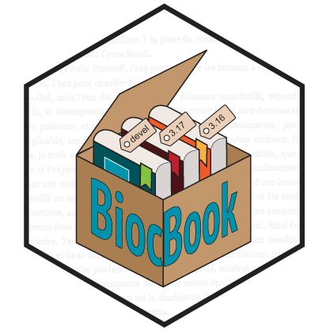

## Warning in packageDescription("ChanningCGDS"): no package 'ChanningCGDS' was
## foundChanningCGDS

Local preview
Welcome
This is the landing page of the BiocBook entitled ….
This book introduces the reader to ….
Docker image
A Docker image built from this repository is available here:
👉 ghcr.io/vjcitn/channingcgds 🐳
Get started now 🎉
You can get access to all the packages used in this book in < 1 minute, using this command in a terminal:
bash
docker run -it ghcr.io/vjcitn/channingcgds:devel RRStudio Server
An RStudio Server instance can be initiated from the Docker image as follows:
bash
docker run \
--volume <local_folder>:<destination_folder> \
-e PASSWORD=OHCA \
-p 8787:8787 \
ghcr.io/vjcitn/channingcgds:develThe initiated RStudio Server instance will be available at https://localhost:8787.
Session info
Click to expand 👇
sessioninfo::session_info(
installed.packages()[,"Package"],
include_base = TRUE
)
## ─ Session info ────────────────────────────────────────────────────────────
## setting value
## version R version 4.5.1 (2025-06-13)
## os macOS Sequoia 15.5
## system aarch64, darwin20
## ui X11
## language (EN)
## collate en_US.UTF-8
## ctype en_US.UTF-8
## tz America/New_York
## date 2025-07-16
## pandoc 2.13 @ /usr/local/bin/ (via rmarkdown)
## quarto 1.5.57 @ /usr/local/bin/quarto
##
## ─ Packages ────────────────────────────────────────────────────────────────
## ! package * version date (UTC) lib source
## abind 1.4-8 2024-09-12 [1] CRAN (R 4.5.0)
## ada 2.0-5 2016-05-13 [1] CRAN (R 4.5.0)
## ade4 1.7-23 2025-02-14 [1] CRAN (R 4.5.0)
## affy 1.87.0 2025-04-27 [1] Bioconductor 3.22 (R 4.5.0)
## affydata 1.57.0 2025-04-17 [1] Bioconductor 3.22 (R 4.5.0)
## affyio 1.79.0 2025-04-27 [1] Bioconductor 3.22 (R 4.5.0)
## AHCytoBands 0.99.1 2021-10-13 [1] Bioconductor
## airway 1.29.0 2025-04-17 [1] Bioconductor 3.22 (R 4.5.0)
## alabaster.base 1.9.4 2025-07-01 [1] Bioconductor 3.22 (R 4.5.1)
## alabaster.matrix 1.9.0 2025-04-15 [1] Bioconductor 3.22 (R 4.5.0)
## alabaster.ranges 1.9.0 2025-04-27 [1] Bioconductor 3.22 (R 4.5.0)
## alabaster.sce 1.9.0 2025-04-27 [1] Bioconductor 3.22 (R 4.5.0)
## alabaster.schemas 1.9.0 2025-04-27 [1] Bioconductor 3.22 (R 4.5.0)
## alabaster.se 1.9.0 2025-04-15 [1] Bioconductor 3.22 (R 4.5.0)
## alabaster.sfe 1.1.0 2025-04-20 [1] Bioconductor 3.22 (R 4.5.0)
## alabaster.spatial 1.9.0 2025-04-27 [1] Bioconductor 3.22 (R 4.5.0)
## ALL 1.51.0 2025-04-17 [1] Bioconductor 3.22 (R 4.5.0)
## alluvial 0.1-2 2016-09-09 [1] CRAN (R 4.5.0)
## AlphaMissenseR 1.5.2 2025-07-07 [1] Bioconductor 3.22 (R 4.5.1)
## analogue 0.18.1 2025-06-25 [1] CRAN (R 4.5.0)
## anndata 0.8.0 2025-05-27 [1] CRAN (R 4.5.0)
## annotate 1.87.0 2025-04-27 [1] Bioconductor 3.22 (R 4.5.0)
## AnnotationDbi 1.71.0 2025-04-27 [1] Bioconductor 3.22 (R 4.5.0)
## AnnotationFilter 1.33.0 2025-04-27 [1] Bioconductor 3.22 (R 4.5.0)
## AnnotationForge 1.51.0 2025-04-27 [1] Bioconductor 3.22 (R 4.5.0)
## AnnotationHub 3.99.6 2025-06-22 [1] Bioconductor 3.22 (R 4.5.1)
## AnnotationHubData 1.39.2 2025-06-22 [1] Bioconductor 3.22 (R 4.5.1)
## anocva 0.1.1 2017-11-10 [1] CRAN (R 4.5.0)
## AnVIL 1.21.7 2025-07-11 [1] Bioconductor 3.22 (R 4.5.1)
## AnVILBase 1.3.1 2025-04-29 [1] Bioconductor 3.22 (R 4.5.0)
## AnVILGCP 1.3.6 2025-07-11 [1] Bioconductor 3.22 (R 4.5.1)
## AnVILPublish 1.19.0 2025-04-27 [1] Bioconductor 3.22 (R 4.5.0)
## aod 1.3.3 2023-12-13 [1] CRAN (R 4.5.0)
## apcluster 1.4.13 2024-04-26 [1] CRAN (R 4.5.0)
## ape 5.8-1 2024-12-16 [1] CRAN (R 4.5.0)
## apeglm 1.31.0 2025-04-27 [1] Bioconductor 3.22 (R 4.5.0)
## aplot 0.2.8 2025-07-02 [1] CRAN (R 4.5.0)
## aricode 1.0.3 2023-10-20 [1] CRAN (R 4.5.0)
## aroma.light 3.39.0 2025-04-27 [1] Bioconductor 3.22 (R 4.5.0)
## arrow 20.0.0.2 2025-05-26 [1] CRAN (R 4.5.0)
## ash 1.0-15 2015-09-01 [1] CRAN (R 4.5.0)
## ashr 2.2-63 2023-08-21 [1] CRAN (R 4.5.0)
## askpass 1.2.1 2024-10-04 [1] CRAN (R 4.5.0)
## assertthat 0.2.1 2019-03-21 [1] CRAN (R 4.5.0)
## assorthead 1.3.4 2025-06-12 [1] Bioconductor 3.22 (R 4.5.0)
## attempt 0.3.1 2020-05-03 [1] CRAN (R 4.5.0)
## av 0.9.4 2025-01-29 [1] CRAN (R 4.5.0)
## available 1.1.0 2022-07-10 [1] CRAN (R 4.5.0)
## babelgene 22.9 2022-09-29 [1] CRAN (R 4.5.0)
## backbone 2.1.4 2024-05-09 [1] CRAN (R 4.5.0)
## backports 1.5.0 2024-05-23 [1] CRAN (R 4.5.0)
## bamsignals 1.41.2 2025-06-22 [1] Bioconductor 3.22 (R 4.5.1)
## Banksy 1.5.6 2025-06-16 [1] Bioconductor 3.22 (R 4.5.0)
## base * 4.5.1 2025-06-14 [?] local
## base64 2.0.2 2024-10-04 [1] CRAN (R 4.5.0)
## base64enc 0.1-3 2015-07-28 [1] CRAN (R 4.5.0)
## base64url 1.4 2018-05-14 [1] CRAN (R 4.5.0)
## basilisk 1.21.5 2025-05-20 [1] Bioconductor 3.22 (R 4.5.0)
## basilisk.utils 1.21.2 2025-05-18 [1] Bioconductor 3.22 (R 4.5.0)
## batchCorr 0.99.7 2025-05-31 [1] Bioconductor
## batchelor 1.25.0 2025-04-15 [1] Bioconductor 3.22 (R 4.5.0)
## bayesm 3.1-6 2023-09-23 [1] CRAN (R 4.5.0)
## baySeq 2.43.0 2025-04-27 [1] Bioconductor 3.22 (R 4.5.0)
## bbmle 1.0.25.1 2023-12-09 [1] CRAN (R 4.5.0)
## bdsmatrix 1.3-7 2024-03-02 [1] CRAN (R 4.5.0)
## beachmat 2.25.1 2025-06-04 [1] Bioconductor 3.22 (R 4.5.0)
## beachmat.hdf5 1.7.0 2025-04-15 [1] Bioconductor 3.22 (R 4.5.0)
## beanplot 1.3.1 2022-04-09 [1] CRAN (R 4.5.0)
## beeswarm 0.4.0 2021-06-01 [1] CRAN (R 4.5.0)
## bench 1.1.4 2025-01-16 [1] CRAN (R 4.5.0)
## benchmarkme 1.0.8 2022-06-12 [1] CRAN (R 4.5.0)
## benchmarkmeData 1.0.4 2020-04-23 [1] CRAN (R 4.5.0)
## BentoBox 0.99.8 2025-07-03 [1] Bioconductor
## bezier 1.1.2 2018-12-14 [1] CRAN (R 4.5.0)
## BH 1.87.0-1 2024-12-17 [1] CRAN (R 4.5.0)
## BiasedUrn 2.0.12 2024-06-16 [1] CRAN (R 4.5.0)
## bibtex 0.5.1 2023-01-26 [1] CRAN (R 4.5.0)
## bigassertr 0.1.7 2025-06-27 [1] CRAN (R 4.5.0)
## bigmemory.sri 0.1.8 2024-01-10 [1] CRAN (R 4.5.0)
## bigparallelr 0.3.2 2021-10-02 [1] CRAN (R 4.5.0)
## bigreadr 0.2.5 2022-12-06 [1] CRAN (R 4.5.0)
## bigsnpr 1.12.18 2024-11-26 [1] CRAN (R 4.5.0)
## bigsparser 0.7.3 2024-09-06 [1] CRAN (R 4.5.0)
## bigstatsr 1.6.1 2024-09-09 [1] CRAN (R 4.5.0)
## bigutilsr 0.3.4 2021-04-13 [1] CRAN (R 4.5.0)
## Biobase 2.69.0 2025-04-27 [1] Bioconductor 3.22 (R 4.5.0)
## BiocAnnoParq 0.0.5 2025-04-29 [1] Bioconductor
## BiocBaseUtils 1.11.0 2025-04-27 [1] Bioconductor 3.22 (R 4.5.0)
## BiocBook 1.7.0 2025-04-27 [1] Bioconductor 3.22 (R 4.5.0)
## BiocCheck 1.45.8 2025-07-09 [1] Bioconductor 3.22 (R 4.5.1)
## biocEDAM 0.0.12 2025-05-10 [1] Github (vjcitn/biocEDAM@b1fefc6)
## BiocFHIR 1.11.0 2025-04-27 [1] Bioconductor 3.22 (R 4.5.0)
## BiocFileCache 2.99.5 2025-05-18 [1] Bioconductor 3.22 (R 4.5.0)
## BiocGenerics 0.55.0 2025-04-27 [1] Bioconductor 3.22 (R 4.5.0)
## BiocHail 1.9.4 2025-07-01 [1] Bioconductor
## BiocHFhub 0.99.0 2025-07-08 [1] Bioconductor
## BiocIO 1.19.0 2025-04-27 [1] Bioconductor 3.22 (R 4.5.0)
## biocmake 1.1.3 2025-05-13 [1] Bioconductor 3.22 (R 4.5.0)
## BiocManager 1.30.26 2025-06-05 [1] CRAN (R 4.5.0)
## BiocNeighbors 2.3.1 2025-05-25 [1] Bioconductor 3.22 (R 4.5.0)
## BiocParallel 1.43.4 2025-06-16 [1] Bioconductor 3.22 (R 4.5.0)
## BiocPkgTools 1.27.7 2025-07-11 [1] Bioconductor 3.22 (R 4.5.1)
## BiocSingular 1.25.0 2025-04-15 [1] Bioconductor 3.22 (R 4.5.0)
## BiocSklearn 1.31.0 2025-05-09 [1] Bioconductor
## BiocStyle 2.37.0 2025-04-27 [1] Bioconductor 3.22 (R 4.5.0)
## biocthis 1.19.0 2025-04-27 [1] Bioconductor 3.22 (R 4.5.0)
## BiocVersion 3.22.0 2025-04-27 [1] Bioconductor 3.22 (R 4.5.0)
## biocViews 1.77.2 2025-05-29 [1] Bioconductor 3.22 (R 4.5.0)
## bioDist 1.81.0 2025-04-27 [1] Bioconductor 3.22 (R 4.5.0)
## biomaRt 2.65.0 2025-04-27 [1] Bioconductor 3.22 (R 4.5.0)
## biomformat 1.37.0 2025-04-27 [1] Bioconductor 3.22 (R 4.5.0)
## Biostrings 2.77.2 2025-06-22 [1] Bioconductor 3.22 (R 4.5.1)
## biovizBase 1.57.1 2025-06-22 [1] Bioconductor 3.22 (R 4.5.1)
## BisqueRNA 1.0.5 2021-05-23 [1] CRAN (R 4.5.0)
## bit 4.6.0 2025-03-06 [1] CRAN (R 4.5.0)
## bit64 4.6.0-1 2025-01-16 [1] CRAN (R 4.5.0)
## bitops 1.0-9 2024-10-03 [1] CRAN (R 4.5.0)
## blob 1.2.4 2023-03-17 [1] CRAN (R 4.5.0)
## bluster 1.19.0 2025-04-27 [1] Bioconductor 3.22 (R 4.5.0)
## bmp 0.3 2017-09-11 [1] CRAN (R 4.5.0)
## bookdown 0.43 2025-04-15 [1] CRAN (R 4.5.0)
## boot 1.3-31 2024-08-28 [2] CRAN (R 4.5.1)
## brew 1.0-10 2023-12-16 [1] CRAN (R 4.5.0)
## brglm 0.7.2 2021-04-22 [1] CRAN (R 4.5.0)
## brio 1.1.5 2024-04-24 [1] CRAN (R 4.5.0)
## BRISC 1.0.6 2024-10-02 [1] CRAN (R 4.5.0)
## broom 1.0.8 2025-03-28 [1] CRAN (R 4.5.0)
## bs4Dash 2.3.4 2024-09-03 [1] CRAN (R 4.5.0)
## BSgenome 1.77.1 2025-06-22 [1] Bioconductor 3.22 (R 4.5.1)
## BSgenome.Celegans.UCSC.ce11 1.4.2 2025-04-28 [1] Bioconductor
## BSgenome.Celegans.UCSC.ce2 1.4.0 2025-07-07 [1] Bioconductor
## BSgenome.Dmelanogaster.UCSC.dm3 1.4.0 2025-04-28 [1] Bioconductor
## BSgenome.Hsapiens.UCSC.hg19 1.4.3 2025-06-10 [1] Bioconductor
## BSgenome.Hsapiens.UCSC.hg38 1.4.5 2025-04-29 [1] Bioconductor
## BSgenomeForge 1.9.1 2025-06-22 [1] Bioconductor 3.22 (R 4.5.1)
## bslib 0.9.0 2025-01-30 [1] CRAN (R 4.5.0)
## bumphunter 1.51.0 2025-04-27 [1] Bioconductor 3.22 (R 4.5.0)
## BumpyMatrix 1.17.0 2025-04-27 [1] Bioconductor 3.22 (R 4.5.0)
## ca 0.71.1 2020-01-24 [1] CRAN (R 4.5.0)
## cachem 1.1.0 2024-05-16 [1] CRAN (R 4.5.0)
## cadd.v1.6.hg38 3.18.1 2023-11-01 [1] Bioconductor
## Cairo 1.6-2 2023-11-28 [1] CRAN (R 4.5.0)
## callr 3.7.6 2024-03-25 [1] CRAN (R 4.5.0)
## car 3.1-3 2024-09-27 [1] CRAN (R 4.5.0)
## carData 3.0-5 2022-01-06 [1] CRAN (R 4.5.0)
## caret 7.0-1 2024-12-10 [1] CRAN (R 4.5.0)
## Category 2.75.0 2025-04-15 [1] Bioconductor 3.22 (R 4.5.0)
## caTools 1.18.3 2024-09-04 [1] CRAN (R 4.5.0)
## CatsCradle 1.3.0 2025-04-27 [1] Bioconductor 3.22 (R 4.5.0)
## cBioPortalData 2.21.4 2025-07-03 [1] Bioconductor 3.22 (R 4.5.1)
## ccaPP 0.3.4 2024-09-04 [1] CRAN (R 4.5.0)
## cclust 0.6-26 2023-05-02 [1] CRAN (R 4.5.0)
## celldex 1.19.0 2025-04-17 [1] Bioconductor 3.22 (R 4.5.0)
## cellranger 1.1.0 2016-07-27 [1] CRAN (R 4.5.0)
## cfTools 1.9.0 2025-06-04 [1] Bioconductor
## cfToolsData 1.7.0 2025-06-04 [1] Bioconductor
## CGDSbook 0.99.0 2025-07-16 [1] local
## changepoint 2.3 2024-11-04 [1] CRAN (R 4.5.0)
## checkmate 2.3.2 2024-07-29 [1] CRAN (R 4.5.0)
## chron 2.3-62 2024-12-31 [1] CRAN (R 4.5.0)
## circlize 0.4.16 2024-02-20 [1] CRAN (R 4.5.0)
## class 7.3-23 2025-01-01 [2] CRAN (R 4.5.1)
## classGraph 0.7-7 2025-04-29 [1] CRAN (R 4.5.0)
## ClassifyR 3.13.0 2025-04-27 [1] Bioconductor 3.22 (R 4.5.0)
## classInt 0.4-11 2025-01-08 [1] CRAN (R 4.5.0)
## cli 3.6.5 2025-04-23 [1] CRAN (R 4.5.0)
## clipr 0.8.0 2022-02-22 [1] CRAN (R 4.5.0)
## clisymbols 1.2.0 2017-05-21 [1] CRAN (R 4.5.0)
## clock 0.7.3 2025-03-21 [1] CRAN (R 4.5.0)
## clue 0.3-66 2024-11-13 [1] CRAN (R 4.5.0)
## cluster 2.1.8.1 2025-03-12 [2] CRAN (R 4.5.1)
## clusterProfiler 4.17.0 2025-04-27 [1] Bioconductor 3.22 (R 4.5.0)
## ClusterR 1.3.3 2024-06-18 [1] CRAN (R 4.5.0)
## clustSIGNAL 1.1.0 2025-04-27 [1] Bioconductor 3.22 (R 4.5.0)
## CNEr 1.43.0 2024-10-29 [1] Bioconductor 3.21 (R 4.5.0)
## coda 0.19-4.1 2024-01-31 [1] CRAN (R 4.5.0)
## CodeDepends 0.6.6 2024-04-07 [1] CRAN (R 4.5.0)
## codetools 0.2-20 2024-03-31 [2] CRAN (R 4.5.1)
## coin 1.4-3 2023-09-27 [1] CRAN (R 4.5.0)
## collapsibleTree 0.1.8 2023-11-13 [1] CRAN (R 4.5.0)
## colorRamps 2.3.4 2024-03-07 [1] CRAN (R 4.5.0)
## colorsGen 1.0.0 2023-10-28 [1] CRAN (R 4.5.0)
## colorspace 2.1-1 2024-07-26 [1] CRAN (R 4.5.0)
## colourpicker 1.3.0 2023-08-21 [1] CRAN (R 4.5.0)
## commonmark 2.0.0 2025-07-07 [1] CRAN (R 4.5.0)
## P compiler 4.5.1 2025-06-14 [2] local
## ComplexHeatmap 2.25.2 2025-06-23 [1] Bioconductor 3.22 (R 4.5.1)
## ComplexUpset 1.3.3 2021-12-11 [1] CRAN (R 4.5.0)
## CompQuadForm 1.4.3 2017-04-12 [1] CRAN (R 4.5.0)
## concaveman 1.1.0 2020-05-11 [1] CRAN (R 4.5.0)
## config 0.3.2 2023-08-30 [1] CRAN (R 4.5.0)
## conflicted 1.2.0 2023-02-01 [1] CRAN (R 4.5.0)
## ConsensusClusterPlus 1.73.0 2025-04-27 [1] Bioconductor 3.22 (R 4.5.0)
## coop 0.6-3 2021-09-19 [1] CRAN (R 4.5.0)
## coro 1.1.0 2024-11-05 [1] CRAN (R 4.5.0)
## corpcor 1.6.10 2021-09-16 [1] CRAN (R 4.5.0)
## corpustools 0.5.2 2025-07-07 [1] CRAN (R 4.5.0)
## corrplot 0.95 2024-10-14 [1] CRAN (R 4.5.0)
## covr 3.6.4 2023-11-09 [1] CRAN (R 4.5.0)
## cowplot 1.2.0 2025-07-07 [1] CRAN (R 4.5.0)
## coxme 2.2-22 2024-08-23 [1] CRAN (R 4.5.0)
## cpp11 0.5.2 2025-03-03 [1] CRAN (R 4.5.0)
## cranlogs 2.1.1 2019-04-29 [1] CRAN (R 4.5.0)
## crayon 1.5.3 2024-06-20 [1] CRAN (R 4.5.0)
## credentials 2.0.2 2024-10-04 [1] CRAN (R 4.5.0)
## cropcircles 0.2.4 2023-12-03 [1] CRAN (R 4.5.0)
## crosstalk 1.2.1 2023-11-23 [1] CRAN (R 4.5.0)
## crul 1.5.0 2024-07-19 [1] CRAN (R 4.5.0)
## ctv 0.9-6 2024-11-26 [1] CRAN (R 4.5.0)
## CuratedAtlasQueryR 1.7.0 2025-04-27 [1] Bioconductor 3.22 (R 4.5.0)
## curatedENCORE 0.0.8 2025-05-01 [1] Bioconductor
## curatedTCGAData 1.31.1 2025-05-06 [1] Bioconductor 3.22 (R 4.5.0)
## curl 6.4.0 2025-06-22 [1] CRAN (R 4.5.0)
## cytolib 2.21.0 2025-04-27 [1] Bioconductor 3.22 (R 4.5.0)
## cytomapper 1.21.0 2025-04-15 [1] Bioconductor 3.22 (R 4.5.0)
## CytoPipeline 1.9.0 2025-04-15 [1] Bioconductor 3.22 (R 4.5.0)
## d3Tree 0.3.0 2024-01-29 [1] CRAN (R 4.5.0)
## data.table 1.17.8 2025-07-10 [1] CRAN (R 4.5.0)
## data.tree 1.1.0 2023-11-12 [1] CRAN (R 4.5.0)
## P datasets * 4.5.1 2025-06-14 [2] local
## DataVisualizations 1.3.3 2025-01-26 [1] CRAN (R 4.5.0)
## DBI 1.2.3 2024-06-02 [1] CRAN (R 4.5.0)
## dbplyr 2.5.0 2024-03-19 [1] CRAN (R 4.5.0)
## dbscan 1.2.2 2025-01-26 [1] CRAN (R 4.5.0)
## dcanr 1.25.0 2025-04-27 [1] Bioconductor 3.22 (R 4.5.0)
## DeconvoBuddies 1.1.0 2025-04-15 [1] Bioconductor 3.22 (R 4.5.0)
## DelayedArray 0.35.2 2025-06-18 [1] Bioconductor 3.22 (R 4.5.0)
## DelayedMatrixStats 1.31.0 2025-04-15 [1] Bioconductor 3.22 (R 4.5.0)
## deldir 2.0-4 2024-02-28 [1] CRAN (R 4.5.0)
## dendextend 1.19.0 2024-11-15 [1] CRAN (R 4.5.0)
## densvis 1.19.0 2025-04-27 [1] Bioconductor 3.22 (R 4.5.0)
## DEoptimR 1.1-3-1 2024-11-23 [1] CRAN (R 4.5.0)
## Deriv 4.2.0 2025-06-20 [1] CRAN (R 4.5.0)
## desc 1.4.3 2023-12-10 [1] CRAN (R 4.5.0)
## DescTools 0.99.60 2025-03-28 [1] CRAN (R 4.5.0)
## DESeq2 1.49.2 2025-06-05 [1] Bioconductor 3.22 (R 4.5.0)
## devtools 2.4.5 2022-10-11 [1] CRAN (R 4.5.0)
## DEXSeq 1.55.1 2025-06-22 [1] Bioconductor 3.22 (R 4.5.1)
## diagram 1.6.5 2020-09-30 [1] CRAN (R 4.5.0)
## DiagrammeR 1.0.11 2024-02-02 [1] CRAN (R 4.5.0)
## dichromat 2.0-0.1 2022-05-02 [1] CRAN (R 4.5.0)
## diffcyt 1.29.0 2025-04-15 [1] Bioconductor 3.22 (R 4.5.0)
## diffobj 0.3.6 2025-04-21 [1] CRAN (R 4.5.0)
## diffusr 0.1.4 2025-07-07 [1] local
## digest 0.6.37 2024-08-19 [1] CRAN (R 4.5.0)
## diptest 0.77-1 2024-04-10 [1] CRAN (R 4.5.0)
## dir.expiry 1.17.0 2025-04-27 [1] Bioconductor 3.22 (R 4.5.0)
## DirichletMultinomial 1.51.0 2025-04-27 [1] Bioconductor 3.22 (R 4.5.0)
## distances 0.1.12 2025-04-01 [1] CRAN (R 4.5.0)
## DNAcopy 1.83.0 2025-04-27 [1] Bioconductor 3.22 (R 4.5.0)
## DO.db 2.9 2025-04-28 [1] Bioconductor
## doBy 4.7.0 2025-06-29 [1] CRAN (R 4.5.0)
## doParallel 1.0.17 2022-02-07 [1] CRAN (R 4.5.0)
## doRNG 1.8.6.2 2025-04-02 [1] CRAN (R 4.5.0)
## DOSE 4.3.0 2025-04-27 [1] Bioconductor 3.22 (R 4.5.0)
## dotCall64 1.2 2024-10-04 [1] CRAN (R 4.5.0)
## downlit 0.4.4 2024-06-10 [1] CRAN (R 4.5.0)
## downloader 0.4.1 2025-03-26 [1] CRAN (R 4.5.0)
## dplyr 1.1.4 2023-11-17 [1] CRAN (R 4.5.0)
## dqrng 0.4.1 2024-05-28 [1] CRAN (R 4.5.0)
## DropletTestFiles 1.19.0 2025-04-17 [1] Bioconductor 3.22 (R 4.5.0)
## DropletUtils 1.29.4 2025-07-02 [1] Bioconductor 3.22 (R 4.5.1)
## DT 0.33 2024-04-04 [1] CRAN (R 4.5.0)
## dtplyr 1.3.1 2023-03-22 [1] CRAN (R 4.5.0)
## duckdb 1.3.2 2025-07-09 [1] CRAN (R 4.5.0)
## dynamicTreeCut 1.63-1 2016-03-11 [1] CRAN (R 4.5.0)
## e1071 1.7-16 2024-09-16 [1] CRAN (R 4.5.0)
## easierData 1.15.0 2025-04-17 [1] Bioconductor 3.22 (R 4.5.0)
## EBImage 4.51.0 2025-04-27 [1] Bioconductor 3.22 (R 4.5.0)
## EDASeq 2.43.0 2025-04-27 [1] Bioconductor 3.22 (R 4.5.0)
## edgeR 4.7.3 2025-07-06 [1] Bioconductor 3.22 (R 4.5.1)
## egg 0.4.5 2019-07-13 [1] CRAN (R 4.5.0)
## elasticnet 1.3 2020-05-15 [1] CRAN (R 4.5.0)
## ellipse 0.5.0 2023-07-20 [1] CRAN (R 4.5.0)
## ellipsis 0.3.2 2021-04-29 [1] CRAN (R 4.5.0)
## ellmer 0.2.1 2025-06-03 [1] CRAN (R 4.5.0)
## emdbook 1.3.13 2023-07-03 [1] CRAN (R 4.5.0)
## emmeans 1.11.2 2025-07-11 [1] CRAN (R 4.5.1)
## english 1.2-6 2021-08-21 [1] CRAN (R 4.5.0)
## enrichplot 1.29.1 2025-04-28 [1] Bioconductor 3.22 (R 4.5.0)
## enrichR 3.4 2025-02-02 [1] CRAN (R 4.5.0)
## EnsDb.Hsapiens.v75 2.99.0 2025-04-28 [1] Bioconductor
## EnsDb.Hsapiens.v79 2.99.0 2025-04-28 [1] Bioconductor
## EnsDb.Hsapiens.v86 2.99.0 2025-04-28 [1] Bioconductor
## ensembldb 2.33.1 2025-06-22 [1] Bioconductor 3.22 (R 4.5.1)
## EnvStats 3.1.0 2025-04-24 [1] CRAN (R 4.5.0)
## estimability 1.5.1 2024-05-12 [1] CRAN (R 4.5.0)
## etrunct 0.1 2016-07-04 [1] CRAN (R 4.5.0)
## europepmc 0.4.3 2023-09-20 [1] CRAN (R 4.5.0)
## evaluate 1.0.4 2025-06-18 [1] CRAN (R 4.5.0)
## Exact 3.3 2024-07-21 [1] CRAN (R 4.5.0)
## exactRankTests 0.8-35 2022-04-26 [1] CRAN (R 4.5.0)
## ExperimentHub 2.99.5 2025-05-18 [1] Bioconductor 3.22 (R 4.5.0)
## ExperimentHubData 1.35.0 2025-04-27 [1] Bioconductor 3.22 (R 4.5.0)
## expm 1.0-0 2024-08-19 [1] CRAN (R 4.5.0)
## factoextra 1.0.7 2020-04-01 [1] CRAN (R 4.5.0)
## FactoMineR 2.11 2024-04-20 [1] CRAN (R 4.5.0)
## fANCOVA 0.6-1 2020-11-13 [1] CRAN (R 4.5.0)
## fansi 1.0.6 2023-12-08 [1] CRAN (R 4.5.0)
## farver 2.1.2 2024-05-13 [1] CRAN (R 4.5.0)
## fastcluster 1.3.0 2025-05-07 [1] CRAN (R 4.5.0)
## fastDummies 1.7.5 2025-01-20 [1] CRAN (R 4.5.0)
## fastmap 1.2.0 2024-05-15 [1] CRAN (R 4.5.0)
## fastmatch 1.1-6 2024-12-23 [1] CRAN (R 4.5.0)
## fauxpas 0.5.2 2023-05-03 [1] CRAN (R 4.5.0)
## FCPS 1.3.4 2023-10-19 [1] CRAN (R 4.5.0)
## FDb.InfiniumMethylation.hg19 2.2.0 2025-04-28 [1] Bioconductor
## FDb.UCSC.tRNAs 1.0.1 2025-04-28 [1] Bioconductor
## fdrtool 1.2.18 2024-08-20 [1] CRAN (R 4.5.0)
## ff 4.5.2 2025-01-13 [1] CRAN (R 4.5.0)
## fftwtools 0.9-11 2021-03-01 [1] CRAN (R 4.5.0)
## fgsea 1.35.6 2025-07-09 [1] Bioconductor 3.22 (R 4.5.1)
## fhircrackr 2.3.0 2025-04-07 [1] CRAN (R 4.5.0)
## fields 16.3.1 2025-03-08 [1] CRAN (R 4.5.0)
## filehash 2.4-6 2024-06-25 [1] CRAN (R 4.5.0)
## filelock 1.0.3 2023-12-11 [1] CRAN (R 4.5.0)
## fission 1.29.0 2025-04-17 [1] Bioconductor 3.22 (R 4.5.0)
## fitdistrplus 1.2-4 2025-07-03 [1] CRAN (R 4.5.0)
## flashClust 1.01-2 2012-08-21 [1] CRAN (R 4.5.0)
## flexmix 2.3-20 2025-02-28 [1] CRAN (R 4.5.0)
## flextable 0.9.9 2025-05-31 [1] CRAN (R 4.5.0)
## flock 0.7 2016-11-12 [1] CRAN (R 4.5.0)
## flowAI 1.39.0 2025-04-15 [1] Bioconductor 3.22 (R 4.5.0)
## flowCore 2.21.0 2025-04-15 [1] Bioconductor 3.22 (R 4.5.0)
## FlowSOM 2.17.0 2025-04-15 [1] Bioconductor 3.22 (R 4.5.0)
## flowWorkspace 4.21.0 2025-04-15 [1] Bioconductor 3.22 (R 4.5.0)
## fluentGenomics 1.21.0 2025-04-22 [1] Bioconductor 3.22 (R 4.5.1)
## FNN 1.1.4.1 2024-09-22 [1] CRAN (R 4.5.0)
## fontawesome 0.5.3 2024-11-16 [1] CRAN (R 4.5.0)
## fontBitstreamVera 0.1.1 2017-02-01 [1] CRAN (R 4.5.0)
## fontLiberation 0.1.0 2016-10-15 [1] CRAN (R 4.5.0)
## fontquiver 0.2.1 2017-02-01 [1] CRAN (R 4.5.0)
## forcats 1.0.0 2023-01-29 [1] CRAN (R 4.5.0)
## foreach 1.5.2 2022-02-02 [1] CRAN (R 4.5.0)
## foreign 0.8-90 2025-03-31 [2] CRAN (R 4.5.1)
## forestplot 3.1.7 2025-06-12 [1] CRAN (R 4.5.0)
## formatR 1.14 2023-01-17 [1] CRAN (R 4.5.0)
## Formula 1.2-5 2023-02-24 [1] CRAN (R 4.5.0)
## formula.tools 1.7.1 2018-03-01 [1] CRAN (R 4.5.0)
## fpc 2.2-13 2024-09-24 [1] CRAN (R 4.5.0)
## fresh 0.2.1 2024-06-26 [1] CRAN (R 4.5.0)
## fs 1.6.6 2025-04-12 [1] CRAN (R 4.5.0)
## fst 0.9.8 2022-02-08 [1] CRAN (R 4.5.0)
## fstcore 0.10.0 2025-02-10 [1] CRAN (R 4.5.0)
## funOmics 1.3.0 2025-04-27 [1] Bioconductor 3.22 (R 4.5.0)
## FuseSOM 1.11.0 2025-04-27 [1] Bioconductor 3.22 (R 4.5.0)
## futile.logger 1.4.3 2016-07-10 [1] CRAN (R 4.5.0)
## futile.options 1.0.1 2018-04-20 [1] CRAN (R 4.5.0)
## future 1.58.0 2025-06-05 [1] CRAN (R 4.5.0)
## future.apply 1.20.0 2025-06-06 [1] CRAN (R 4.5.0)
## ganttrify 0.0.1.9005 2025-06-07 [1] Github (giocomai/ganttrify@e26ccca)
## gargle 1.5.2 2023-07-20 [1] CRAN (R 4.5.0)
## GBCC.mcm 0.0.10 2025-06-12 [1] Bioconductor
## gbm 2.2.2 2024-06-28 [1] CRAN (R 4.5.0)
## gclus 1.3.3 2025-03-28 [1] CRAN (R 4.5.0)
## GCPtools 0.99.1 2025-07-11 [1] Bioconductor 3.22 (R 4.5.1)
## gdata 3.0.1 2024-10-22 [1] CRAN (R 4.5.0)
## gDNAinRNAseqData 1.9.0 2025-04-17 [1] Bioconductor 3.22 (R 4.5.0)
## gDNAx 1.7.3 2025-06-29 [1] Bioconductor 3.22 (R 4.5.1)
## gdsfmt 1.45.1 2025-07-06 [1] Bioconductor 3.22 (R 4.5.1)
## gdtools 0.4.2 2025-03-27 [1] CRAN (R 4.5.0)
## gee 4.13-29 2024-12-11 [1] CRAN (R 4.5.0)
## genefilter 1.91.0 2025-04-27 [1] Bioconductor 3.22 (R 4.5.0)
## genekitr 1.2.8 2024-09-06 [1] CRAN (R 4.5.0)
## geneLenDataBase 1.45.0 2025-04-17 [1] Bioconductor 3.22 (R 4.5.0)
## geneplotter 1.87.0 2025-04-27 [1] Bioconductor 3.22 (R 4.5.0)
## generics 0.1.4 2025-05-09 [1] CRAN (R 4.5.0)
## geneset 0.2.7 2022-11-20 [1] CRAN (R 4.5.0)
## GeneTonic 3.3.2 2025-06-24 [1] Bioconductor 3.22 (R 4.5.1)
## GenomAutomorphism 1.11.0 2025-04-27 [1] Bioconductor 3.22 (R 4.5.0)
## GenomeInfoDb 1.45.7 2025-07-01 [1] Bioconductor 3.22 (R 4.5.1)
## GenomeInfoDbData 1.2.14 2025-04-29 [1] Bioconductor
## GenomicAlignments 1.45.1 2025-06-22 [1] Bioconductor 3.22 (R 4.5.1)
## GenomicDataCommons 1.33.1 2025-05-13 [1] Bioconductor 3.22 (R 4.5.0)
## GenomicFeatures 1.61.4 2025-06-22 [1] Bioconductor 3.22 (R 4.5.1)
## GenomicFiles 1.45.0 2025-04-29 [1] Bioconductor 3.22 (R 4.5.0)
## GenomicRanges 1.61.1 2025-06-22 [1] Bioconductor 3.22 (R 4.5.1)
## GenomicScores 2.21.3 2025-07-04 [1] Bioconductor 3.22 (R 4.5.1)
## GenomicSuperSignature 1.17.0 2025-04-27 [1] Bioconductor 3.22 (R 4.5.0)
## GenomicTools.fileHandler 0.1.5.9 2020-03-05 [1] CRAN (R 4.5.0)
## geoarrow 0.3.0 2025-05-26 [1] CRAN (R 4.5.0)
## geometries 0.2.4 2024-01-15 [1] CRAN (R 4.5.0)
## geometry 0.5.2 2025-02-08 [1] CRAN (R 4.5.0)
## GEOquery 2.77.1 2025-07-09 [1] Bioconductor 3.22 (R 4.5.1)
## gert 2.1.5 2025-03-25 [1] CRAN (R 4.5.0)
## GetoptLong 1.0.5 2020-12-15 [1] CRAN (R 4.5.0)
## getPass 0.2-4 2023-12-10 [1] CRAN (R 4.5.0)
## GGally 2.2.1 2024-02-14 [1] CRAN (R 4.5.0)
## ggbeeswarm 0.7.2 2023-04-29 [1] CRAN (R 4.5.0)
## ggbio 1.57.1 2025-06-23 [1] Bioconductor 3.22 (R 4.5.1)
## ggbiplot 0.6.2 2024-01-08 [1] CRAN (R 4.5.0)
## ggcyto 1.37.0 2025-04-15 [1] Bioconductor 3.22 (R 4.5.0)
## ggdendro 0.2.0 2024-02-23 [1] CRAN (R 4.5.0)
## ggforce 0.5.0 2025-06-18 [1] CRAN (R 4.5.0)
## ggfortify 0.4.18 2025-07-03 [1] CRAN (R 4.5.0)
## ggfun 0.1.9 2025-06-21 [1] CRAN (R 4.5.0)
## ggh4x 0.3.1 2025-05-30 [1] CRAN (R 4.5.0)
## ggiraph 0.8.13 2025-03-28 [1] CRAN (R 4.5.0)
## ggmanh 1.13.0 2025-04-27 [1] Bioconductor 3.22 (R 4.5.0)
## ggmap 4.0.1 2025-04-07 [1] CRAN (R 4.5.0)
## ggnetwork 0.5.13 2024-02-14 [1] CRAN (R 4.5.0)
## ggnewscale 0.5.2 2025-06-20 [1] CRAN (R 4.5.0)
## ggpath 1.0.2 2024-08-20 [1] CRAN (R 4.5.0)
## ggplot.multistats 1.0.1 2024-09-25 [1] CRAN (R 4.5.0)
## ggplot2 3.5.2 2025-04-09 [1] CRAN (R 4.5.0)
## ggplotify 0.1.2 2023-08-09 [1] CRAN (R 4.5.0)
## ggpubr 0.6.1 2025-06-27 [1] CRAN (R 4.5.0)
## ggraph 2.2.1 2024-03-07 [1] CRAN (R 4.5.0)
## ggrastr 1.0.2 2023-06-01 [1] CRAN (R 4.5.0)
## ggrepel 0.9.6 2024-09-07 [1] CRAN (R 4.5.0)
## ggridges 0.5.6 2024-01-23 [1] CRAN (R 4.5.0)
## ggsc 1.7.0 2025-04-27 [1] Bioconductor 3.22 (R 4.5.0)
## ggsci 3.2.0 2024-06-18 [1] CRAN (R 4.5.0)
## ggside 0.3.1 2024-03-01 [1] CRAN (R 4.5.0)
## ggsignif 0.6.4 2022-10-13 [1] CRAN (R 4.5.0)
## ggspavis 1.15.7 2025-05-21 [1] Bioconductor 3.22 (R 4.5.0)
## ggstats 0.10.0 2025-07-02 [1] CRAN (R 4.5.0)
## ggsurvfit 1.1.0 2024-05-08 [1] CRAN (R 4.5.0)
## ggtangle 0.0.7 2025-06-30 [1] CRAN (R 4.5.0)
## ggtext 0.1.2 2022-09-16 [1] CRAN (R 4.5.0)
## ggthemes 5.1.0 2024-02-10 [1] CRAN (R 4.5.0)
## ggtree 3.17.1 2025-07-11 [1] Bioconductor 3.22 (R 4.5.1)
## ggupset 0.4.1 2025-02-11 [1] CRAN (R 4.5.0)
## ggvenn 0.1.10 2023-03-31 [1] CRAN (R 4.5.0)
## ggvis 0.4.9 2024-02-05 [1] CRAN (R 4.5.0)
## gh 1.5.0 2025-05-26 [1] CRAN (R 4.5.0)
## gifski 1.32.0-2 2025-03-18 [1] CRAN (R 4.5.0)
## git2r 0.36.2 2025-03-29 [1] CRAN (R 4.5.0)
## gitcreds 0.1.2 2022-09-08 [1] CRAN (R 4.5.0)
## glasso 1.11 2019-10-01 [1] CRAN (R 4.5.0)
## gld 2.6.7 2025-01-17 [1] CRAN (R 4.5.0)
## glmGamPoi 1.21.0 2025-04-15 [1] Bioconductor 3.22 (R 4.5.0)
## glmnet 4.1-9 2025-06-02 [1] CRAN (R 4.5.0)
## glmpca 0.2.0 2020-07-18 [1] CRAN (R 4.5.0)
## GlobalOptions 0.1.2 2020-06-10 [1] CRAN (R 4.5.0)
## globals 0.18.0 2025-05-08 [1] CRAN (R 4.5.0)
## glue 1.8.0 2024-09-30 [1] CRAN (R 4.5.0)
## gmodels 2.19.1 2024-03-06 [1] CRAN (R 4.5.0)
## gmp 0.7-5 2024-08-23 [1] CRAN (R 4.5.0)
## GO.db 3.21.0 2025-04-28 [1] Bioconductor
## goftest 1.2-3 2021-10-07 [1] CRAN (R 4.5.0)
## golem 0.5.1 2024-08-27 [1] CRAN (R 4.5.0)
## golubEsets 1.51.0 2025-04-17 [1] Bioconductor 3.22 (R 4.5.0)
## googleAnalyticsR 1.2.0 2024-08-16 [1] CRAN (R 4.5.0)
## googleAuthR 2.0.2 2024-05-22 [1] CRAN (R 4.5.0)
## googledrive 2.1.1 2023-06-11 [1] CRAN (R 4.5.0)
## googlesheets4 1.1.1 2023-06-11 [1] CRAN (R 4.5.0)
## GOSemSim 2.35.0 2025-04-27 [1] Bioconductor 3.22 (R 4.5.0)
## goseq 1.61.0 2025-04-27 [1] Bioconductor 3.22 (R 4.5.0)
## GOstats 2.75.0 2025-04-27 [1] Bioconductor 3.22 (R 4.5.0)
## gower 1.0.2 2024-12-17 [1] CRAN (R 4.5.0)
## GPArotation 2025.3-1 2025-04-12 [1] CRAN (R 4.5.0)
## gplots 3.2.0 2024-10-05 [1] CRAN (R 4.5.0)
## gpuMagic 1.25.0 2025-05-13 [1] Bioconductor
## graph 1.87.0 2025-04-27 [1] Bioconductor 3.22 (R 4.5.0)
## P graphics * 4.5.1 2025-06-14 [2] local
## graphite 1.55.0 2025-04-27 [1] Bioconductor 3.22 (R 4.5.0)
## graphlayouts 1.2.2 2025-01-23 [1] CRAN (R 4.5.0)
## P grDevices * 4.5.1 2025-06-14 [2] local
## grid 4.5.1 2025-06-14 [?] local
## gridBase 0.4-7 2014-02-24 [1] CRAN (R 4.5.0)
## gridExtra 2.3 2017-09-09 [1] CRAN (R 4.5.0)
## gridGraphics 0.5-1 2020-12-13 [1] CRAN (R 4.5.0)
## gridSVG 1.7-5 2023-03-09 [1] CRAN (R 4.5.0)
## gridtext 0.1.5 2022-09-16 [1] CRAN (R 4.5.0)
## GSEABase 1.71.0 2025-04-27 [1] Bioconductor 3.22 (R 4.5.0)
## gson 0.1.0 2023-03-07 [1] CRAN (R 4.5.0)
## gss 2.2-9 2025-04-13 [1] CRAN (R 4.5.0)
## gstat 2.1-4 2025-07-10 [1] CRAN (R 4.5.0)
## gsubfn 0.7 2018-03-16 [1] CRAN (R 4.5.0)
## gtable 0.3.6 2024-10-25 [1] CRAN (R 4.5.0)
## gtools 3.9.5 2023-11-20 [1] CRAN (R 4.5.0)
## Gviz 1.53.1 2025-06-22 [1] Bioconductor 3.22 (R 4.5.1)
## gwascat 2.41.1 2025-06-22 [1] Bioconductor 3.22 (R 4.5.1)
## gwasCatSearch 0.2.17 2025-06-17 [1] Github (vjcitn/gwasCatSearch@804d3ba)
## gypsum 1.5.0 2025-04-27 [1] Bioconductor 3.22 (R 4.5.0)
## h5mread 1.1.1 2025-05-28 [1] Bioconductor 3.22 (R 4.5.0)
## h5vcData 2.29.0 2025-04-17 [1] Bioconductor 3.22 (R 4.5.0)
## hardhat 1.4.1 2025-01-31 [1] CRAN (R 4.5.0)
## harmony 1.2.3 2024-11-27 [1] CRAN (R 4.5.0)
## hash 2.2.6.3 2023-08-19 [1] CRAN (R 4.5.0)
## haven 2.5.5 2025-05-30 [1] CRAN (R 4.5.0)
## hca 1.17.0 2025-04-27 [1] Bioconductor 3.22 (R 4.5.0)
## HCAData 1.25.0 2025-04-17 [1] Bioconductor 3.22 (R 4.5.0)
## HDF5Array 1.37.0 2025-04-15 [1] Bioconductor 3.22 (R 4.5.0)
## HDO.db 1.0.0 2025-04-28 [1] Bioconductor
## hdrcde 3.4 2021-01-18 [1] CRAN (R 4.5.0)
## heatmaply 1.6.0 2025-07-12 [1] CRAN (R 4.5.1)
## here 1.0.1 2020-12-13 [1] CRAN (R 4.5.0)
## hexbin 1.28.5 2024-11-13 [1] CRAN (R 4.5.0)
## hfhub 0.1.1 2023-08-18 [1] CRAN (R 4.5.0)
## hgu95av2 2.2.0 2025-04-28 [1] Bioconductor
## hgu95av2.db 3.13.0 2025-04-28 [1] Bioconductor
## hgu95av2cdf 2.18.0 2025-04-28 [1] Bioconductor
## hgu95av2probe 2.18.0 2025-04-28 [1] Bioconductor
## highcharter 0.9.4 2022-01-03 [1] CRAN (R 4.5.0)
## highr 0.11 2024-05-26 [1] CRAN (R 4.5.0)
## Hmisc 5.2-3 2025-03-16 [1] CRAN (R 4.5.0)
## hms 1.1.3 2023-03-21 [1] CRAN (R 4.5.0)
## hopach 2.69.0 2025-04-27 [1] Bioconductor 3.22 (R 4.5.0)
## HPiP 1.15.0 2025-04-27 [1] Bioconductor 3.22 (R 4.5.0)
## HSMMSingleCell 1.29.0 2025-04-17 [1] Bioconductor 3.22 (R 4.5.0)
## htmlTable 2.4.3 2024-07-21 [1] CRAN (R 4.5.0)
## htmltools 0.5.8.1 2024-04-04 [1] CRAN (R 4.5.0)
## htmlwidgets 1.6.4 2023-12-06 [1] CRAN (R 4.5.0)
## httpcode 0.3.0 2020-04-10 [1] CRAN (R 4.5.0)
## httptest2 1.2.0 2025-06-27 [1] CRAN (R 4.5.0)
## httpuv 1.6.16 2025-04-16 [1] CRAN (R 4.5.0)
## httr 1.4.7 2023-08-15 [1] CRAN (R 4.5.0)
## httr2 1.1.2 2025-03-26 [1] CRAN (R 4.5.0)
## hugene10stv1cdf 2.18.0 2025-04-28 [1] Bioconductor
## human.db0 3.21.0 2025-05-16 [1] Bioconductor
## hunspell 3.0.6 2025-03-22 [1] CRAN (R 4.5.0)
## hwriter 1.3.2.1 2022-04-08 [1] CRAN (R 4.5.0)
## ica 1.0-3 2022-07-08 [1] CRAN (R 4.5.0)
## ids 1.0.1 2017-05-31 [1] CRAN (R 4.5.0)
## igraph 2.1.4 2025-01-23 [1] CRAN (R 4.5.0)
## igvShiny 1.5.0 2025-04-27 [1] Bioconductor 3.22 (R 4.5.0)
## IHW 1.37.0 2025-04-27 [1] Bioconductor 3.22 (R 4.5.0)
## IlluminaHumanMethylation450kanno.ilmn12.hg19 0.6.1 2025-04-28 [1] Bioconductor
## illuminaio 0.51.0 2025-04-27 [1] Bioconductor 3.22 (R 4.5.0)
## imager 1.0.3 2025-03-25 [1] CRAN (R 4.5.0)
## imcdatasets 1.17.0 2025-04-17 [1] Bioconductor 3.22 (R 4.5.0)
## impute 1.83.0 2025-04-27 [1] Bioconductor 3.22 (R 4.5.0)
## ini 0.3.1 2018-05-20 [1] CRAN (R 4.5.0)
## InteractionSet 1.37.0 2025-04-27 [1] Bioconductor 3.22 (R 4.5.0)
## interactiveDisplay 1.47.1 2025-06-18 [1] Bioconductor 3.22 (R 4.5.0)
## interactiveDisplayBase 1.47.1 2025-06-18 [1] Bioconductor 3.22 (R 4.5.0)
## interp 1.1-6 2024-01-26 [1] CRAN (R 4.5.0)
## intervals 0.15.5 2024-08-23 [1] CRAN (R 4.5.0)
## inum 1.0-5 2023-03-09 [1] CRAN (R 4.5.0)
## invgamma 1.2 2025-07-02 [1] CRAN (R 4.5.0)
## ipred 0.9-15 2024-07-18 [1] CRAN (R 4.5.0)
## IRanges 2.43.0 2025-04-27 [1] Bioconductor 3.22 (R 4.5.0)
## irlba 2.3.5.1 2022-10-03 [1] CRAN (R 4.5.0)
## iSEE 2.21.1 2025-06-03 [1] Bioconductor 3.22 (R 4.5.0)
## IsingFit 0.4 2023-10-03 [1] CRAN (R 4.5.0)
## isoband 0.2.7 2022-12-20 [1] CRAN (R 4.5.0)
## ISOcodes 2025.05.18 2025-05-18 [1] CRAN (R 4.5.0)
## iterators 1.0.14 2022-02-05 [1] CRAN (R 4.5.0)
## ivygapSE 1.31.0 2025-04-27 [1] Bioconductor 3.22 (R 4.5.0)
## janeaustenr 1.0.0 2022-08-26 [1] CRAN (R 4.5.0)
## janitor 2.2.1 2024-12-22 [1] CRAN (R 4.5.0)
## jose 1.2.1 2024-10-04 [1] CRAN (R 4.5.0)
## jpeg 0.1-11 2025-03-21 [1] CRAN (R 4.5.0)
## jquerylib 0.1.4 2021-04-26 [1] CRAN (R 4.5.0)
## jrc 0.6.0 2023-08-23 [1] CRAN (R 4.5.0)
## jsonlite 2.0.0 2025-03-27 [1] CRAN (R 4.5.0)
## jsonvalidate 1.5.0 2025-02-07 [1] CRAN (R 4.5.0)
## JuliaCall 0.17.6 2024-12-07 [1] CRAN (R 4.5.0)
## kableExtra 1.4.0 2024-01-24 [1] CRAN (R 4.5.0)
## karyoploteR 1.35.3 2025-06-22 [1] Bioconductor 3.22 (R 4.5.1)
## kebabs 1.43.0 2025-04-27 [1] Bioconductor 3.22 (R 4.5.0)
## KEGGgraph 1.69.0 2025-04-27 [1] Bioconductor 3.22 (R 4.5.0)
## KEGGREST 1.49.1 2025-06-18 [1] Bioconductor 3.22 (R 4.5.0)
## keras 2.15.0 2024-04-20 [1] CRAN (R 4.5.0)
## kernlab 0.9-33 2024-08-13 [1] CRAN (R 4.5.0)
## KernSmooth 2.23-26 2025-01-01 [2] CRAN (R 4.5.1)
## km.ci 0.5-6 2022-04-06 [1] CRAN (R 4.5.0)
## KMsurv 0.1-6 2025-05-20 [1] CRAN (R 4.5.0)
## knitr 1.50 2025-03-16 [1] CRAN (R 4.5.0)
## knn.covertree 1.0 2019-10-28 [1] CRAN (R 4.5.0)
## ks 1.15.1 2025-05-04 [1] CRAN (R 4.5.0)
## labeling 0.4.3 2023-08-29 [1] CRAN (R 4.5.0)
## laeken 0.5.3 2024-01-25 [1] CRAN (R 4.5.0)
## lambda.r 1.2.4 2019-09-18 [1] CRAN (R 4.5.0)
## lars 1.3 2022-04-13 [1] CRAN (R 4.5.0)
## later 1.4.2 2025-04-08 [1] CRAN (R 4.5.0)
## lattice 0.22-7 2025-04-02 [1] CRAN (R 4.5.0)
## latticeExtra 0.6-30 2022-07-04 [1] CRAN (R 4.5.0)
## lava 1.8.1 2025-01-12 [1] CRAN (R 4.5.0)
## lavaan 0.6-19 2024-09-26 [1] CRAN (R 4.5.0)
## lazyeval 0.2.2 2019-03-15 [1] CRAN (R 4.5.0)
## leaps 3.2 2024-06-10 [1] CRAN (R 4.5.0)
## LearnBayes 2.15.1 2018-03-18 [1] CRAN (R 4.5.0)
## leidenAlg 1.1.5 2025-04-19 [1] CRAN (R 4.5.0)
## leidenbase 0.1.35 2025-04-02 [1] CRAN (R 4.5.0)
## lemur 1.7.0 2025-05-12 [1] Bioconductor
## libcoin 1.0-10 2023-09-27 [1] CRAN (R 4.5.0)
## LiblineaR 2.10-24 2024-09-13 [1] CRAN (R 4.5.0)
## lifecycle 1.0.4 2023-11-07 [1] CRAN (R 4.5.0)
## limma 3.65.1 2025-05-21 [1] Bioconductor 3.22 (R 4.5.0)
## limpa 1.1.5 2025-06-22 [1] Bioconductor 3.22 (R 4.5.1)
## limSolve 2.0.1 2025-06-24 [1] CRAN (R 4.5.0)
## lineagespot 1.13.0 2025-04-29 [1] Bioconductor 3.22 (R 4.5.0)
## linprog 0.9-4 2022-03-09 [1] CRAN (R 4.5.0)
## lisaClust 1.17.0 2025-04-27 [1] Bioconductor 3.22 (R 4.5.0)
## listenv 0.9.1 2024-01-29 [1] CRAN (R 4.5.0)
## listviewer 4.0.0 2023-09-30 [1] CRAN (R 4.5.0)
## litedown 0.7 2025-04-08 [1] CRAN (R 4.5.0)
## llm4np 0.0.3 2025-06-28 [1] Bioconductor
## lme4 1.1-37 2025-03-26 [1] CRAN (R 4.5.0)
## lmerTest 3.1-3 2020-10-23 [1] CRAN (R 4.5.0)
## lmom 3.2 2024-09-30 [1] CRAN (R 4.5.0)
## lmtest 0.9-40 2022-03-21 [1] CRAN (R 4.5.0)
## lobstr 1.1.2 2022-06-22 [1] CRAN (R 4.5.0)
## locfdr 1.1-8 2015-07-15 [1] CRAN (R 4.5.0)
## locfit 1.5-9.12 2025-03-05 [1] CRAN (R 4.5.0)
## locStra 1.9 2022-04-12 [1] CRAN (R 4.5.0)
## logger 0.4.0 2024-10-22 [1] CRAN (R 4.5.0)
## lpSolve 5.6.23 2024-12-14 [1] CRAN (R 4.5.0)
## lpsymphony 1.37.0 2025-04-27 [1] Bioconductor 3.22 (R 4.5.0)
## lubridate 1.9.4 2024-12-08 [1] CRAN (R 4.5.0)
## lumi 2.61.0 2025-04-27 [1] Bioconductor 3.22 (R 4.5.0)
## macrophage 1.25.0 2025-04-17 [1] Bioconductor 3.22 (R 4.5.0)
## maftools 2.25.10 2025-04-30 [1] Bioconductor 3.22 (R 4.5.0)
## magic 1.6-1 2022-11-16 [1] CRAN (R 4.5.0)
## magick 2.8.7 2025-06-06 [1] CRAN (R 4.5.0)
## magrittr 2.0.3 2022-03-30 [1] CRAN (R 4.5.0)
## MALDIquant 1.22.3 2024-08-19 [1] CRAN (R 4.5.0)
## mapproj 1.2.12 2025-05-19 [1] CRAN (R 4.5.0)
## maps 3.4.3 2025-05-26 [1] CRAN (R 4.5.0)
## markdown 2.0 2025-03-23 [1] CRAN (R 4.5.0)
## MASS 7.3-65 2025-02-28 [2] CRAN (R 4.5.1)
## mathjaxr 1.8-0 2025-04-30 [1] CRAN (R 4.5.0)
## matlab 1.0.4.1 2024-07-01 [1] CRAN (R 4.5.0)
## Matrix 1.7-3 2025-03-11 [2] CRAN (R 4.5.1)
## MatrixGenerics 1.21.0 2025-04-27 [1] Bioconductor 3.22 (R 4.5.0)
## MatrixModels 0.5-4 2025-03-26 [1] CRAN (R 4.5.0)
## matrixStats 1.5.0 2025-01-07 [1] CRAN (R 4.5.0)
## maxstat 0.7-26 2025-05-02 [1] CRAN (R 4.5.0)
## mboost 2.9-11 2024-08-22 [1] CRAN (R 4.5.0)
## MCL 1.0 2015-03-11 [1] CRAN (R 4.5.0)
## mclust 6.1.1 2024-04-29 [1] CRAN (R 4.5.0)
## measurementProtocol 0.1.1 2023-03-04 [1] CRAN (R 4.5.0)
## memoise 2.0.1 2021-11-26 [1] CRAN (R 4.5.0)
## memuse 4.2-3 2023-01-24 [1] CRAN (R 4.5.0)
## MetaboCoreUtils 1.17.1 2025-05-13 [1] Bioconductor 3.22 (R 4.5.0)
## metadat 1.4-0 2025-02-04 [1] CRAN (R 4.5.0)
## metafor 4.8-0 2025-01-28 [1] CRAN (R 4.5.0)
## metagenomeSeq 1.51.0 2025-04-27 [1] Bioconductor 3.22 (R 4.5.0)
## metapod 1.17.0 2025-04-27 [1] Bioconductor 3.22 (R 4.5.0)
## P methods * 4.5.1 2025-06-14 [2] local
## methrix 1.23.0 2025-04-15 [1] Bioconductor 3.22 (R 4.5.0)
## methylumi 2.55.0 2025-04-27 [1] Bioconductor 3.22 (R 4.5.0)
## metR 0.18.1 2025-05-13 [1] CRAN (R 4.5.0)
## mgcv 1.9-3 2025-04-04 [1] CRAN (R 4.5.0)
## microbenchmark 1.5.0 2024-09-04 [1] CRAN (R 4.5.0)
## microRNA 1.67.0 2025-04-27 [1] Bioconductor 3.22 (R 4.5.0)
## mime 0.13 2025-03-17 [1] CRAN (R 4.5.0)
## minfi 1.55.1 2025-06-23 [1] Bioconductor 3.22 (R 4.5.1)
## minimap2 0.2.0 2025-04-28 [1] local
## miniUI 0.1.2 2025-04-17 [1] CRAN (R 4.5.0)
## minqa 1.2.8 2024-08-17 [1] CRAN (R 4.5.0)
## mirbase.db 1.2.1 2025-04-28 [1] Bioconductor
## miRBaseConverter 1.33.0 2025-04-27 [1] Bioconductor 3.22 (R 4.5.0)
## MIRit 1.5.1 2025-05-05 [1] Bioconductor 3.22 (R 4.5.0)
## mixsqp 0.3-54 2023-12-20 [1] CRAN (R 4.5.0)
## mlbench 2.1-6 2024-12-30 [1] CRAN (R 4.5.0)
## MLInterfaces 1.89.0 2025-04-27 [1] Bioconductor 3.22 (R 4.5.0)
## mnormt 2.1.1 2022-09-26 [1] CRAN (R 4.5.0)
## mockery 0.4.4 2023-09-26 [1] CRAN (R 4.5.0)
## ModelMetrics 1.2.2.2 2020-03-17 [1] CRAN (R 4.5.0)
## modelr 0.1.11 2023-03-22 [1] CRAN (R 4.5.0)
## modeltools 0.2-24 2025-05-02 [1] CRAN (R 4.5.0)
## MOFAdata 1.25.0 2025-04-17 [1] Bioconductor 3.22 (R 4.5.0)
## mongolite 4.0.0 2025-04-01 [1] CRAN (R 4.5.0)
## mosdef 1.5.1 2025-06-24 [1] Bioconductor 3.22 (R 4.5.1)
## MotifDb 1.51.0 2025-04-27 [1] Bioconductor 3.22 (R 4.5.0)
## motifStack 1.53.0 2025-04-27 [1] Bioconductor 3.22 (R 4.5.0)
## MsCoreUtils 1.21.0 2025-04-27 [1] Bioconductor 3.22 (R 4.5.0)
## msigdb 1.17.0 2025-04-17 [1] Bioconductor 3.22 (R 4.5.0)
## msigdbr 25.1.0 2025-07-03 [1] CRAN (R 4.5.0)
## MSnbase 2.35.0 2025-04-27 [1] Bioconductor 3.22 (R 4.5.0)
## multcomp 1.4-28 2025-01-29 [1] CRAN (R 4.5.0)
## multcompView 0.1-10 2024-03-08 [1] CRAN (R 4.5.0)
## MultiAssayExperiment 1.35.3 2025-05-06 [1] Bioconductor 3.22 (R 4.5.0)
## multicool 1.0.1 2024-02-05 [1] CRAN (R 4.5.0)
## multiWGCNAdata 1.7.0 2025-04-17 [1] Bioconductor 3.22 (R 4.5.0)
## multtest 2.65.0 2025-04-27 [1] Bioconductor 3.22 (R 4.5.0)
## munsell 0.5.1 2024-04-01 [1] CRAN (R 4.5.0)
## muscData 1.23.0 2025-04-17 [1] Bioconductor 3.22 (R 4.5.0)
## mvtnorm 1.3-3 2025-01-10 [1] CRAN (R 4.5.0)
## mygene 1.45.0 2025-04-27 [1] Bioconductor 3.22 (R 4.5.0)
## mzID 1.47.0 2025-04-27 [1] Bioconductor 3.22 (R 4.5.0)
## mzR 2.43.0 2025-04-27 [1] Bioconductor 3.22 (R 4.5.0)
## nabor 0.5.0 2018-07-11 [1] CRAN (R 4.5.0)
## nanoarrow 0.7.0 2025-07-03 [1] CRAN (R 4.5.0)
## ncdf4 1.24 2025-03-25 [1] CRAN (R 4.5.0)
## ncdfFlow 2.55.0 2025-04-15 [1] Bioconductor 3.22 (R 4.5.0)
## neo2R 2.4.2 2024-01-18 [1] CRAN (R 4.5.0)
## neo4r 0.1.1 2019-02-15 [1] CRAN (R 4.5.0)
## network 1.19.0 2024-12-09 [1] CRAN (R 4.5.0)
## networkD3 0.4.1 2025-04-14 [1] CRAN (R 4.5.0)
## NetworkToolbox 1.4.4 2025-05-08 [1] CRAN (R 4.5.0)
## nhanesA 1.3 2025-01-10 [1] CRAN (R 4.5.0)
## nipals 1.0 2024-12-02 [1] CRAN (R 4.5.0)
## NISTunits 1.0.1 2016-08-11 [1] CRAN (R 4.5.0)
## nleqslv 3.3.5 2023-11-26 [1] CRAN (R 4.5.0)
## nlme 3.1-168 2025-03-31 [2] CRAN (R 4.5.1)
## nloptr 2.2.1 2025-03-17 [1] CRAN (R 4.5.0)
## NMF 0.28 2024-08-22 [1] CRAN (R 4.5.0)
## nnet 7.3-20 2025-01-01 [2] CRAN (R 4.5.1)
## nnls 1.6 2024-10-23 [1] CRAN (R 4.5.0)
## nnSVG 1.13.1 2025-05-19 [1] Bioconductor 3.22 (R 4.5.0)
## nor1mix 1.3-3 2024-04-06 [1] CRAN (R 4.5.0)
## nortest 1.0-4 2015-07-30 [1] CRAN (R 4.5.0)
## nullranges 1.15.0 2025-04-27 [1] Bioconductor 3.22 (R 4.5.0)
## numbers 0.8-5 2022-11-23 [1] CRAN (R 4.5.0)
## numDeriv 2016.8-1.1 2019-06-06 [1] CRAN (R 4.5.0)
## NxtIRFdata 1.15.0 2025-04-17 [1] Bioconductor 3.22 (R 4.5.0)
## officer 0.6.10 2025-05-30 [1] CRAN (R 4.5.0)
## OGRE 1.13.0 2025-04-28 [1] Bioconductor 3.22 (R 4.5.0)
## ollamar 1.2.2 2025-01-08 [1] CRAN (R 4.5.0)
## ompBAM 1.13.0 2025-04-27 [1] Bioconductor 3.22 (R 4.5.0)
## omXplore 1.3.0 2025-04-27 [1] Bioconductor 3.22 (R 4.5.0)
## onto4autism 0.0.2 2025-06-15 [1] Github (vjcitn/onto4autism@0e0b653)
## ontologyIndex 2.12 2024-02-27 [1] CRAN (R 4.5.0)
## ontologyPlot 1.7 2024-02-20 [1] CRAN (R 4.5.0)
## ontoProc 2.3.6 2025-07-06 [1] Bioconductor 3.22 (R 4.5.1)
## openai 0.4.1 2023-03-15 [1] CRAN (R 4.5.0)
## opencpu 2.2.14 2024-10-04 [1] CRAN (R 4.5.0)
## openssl 2.3.3 2025-05-26 [1] CRAN (R 4.5.0)
## openxlsx 4.2.8 2025-01-25 [1] CRAN (R 4.5.0)
## operator.tools 1.6.3 2017-02-28 [1] CRAN (R 4.5.0)
## org.Dr.eg.db 3.21.0 2025-04-28 [1] Bioconductor
## org.Hs.eg.db 3.21.0 2025-04-28 [1] Bioconductor
## org.Mm.eg.db 3.21.0 2025-04-28 [1] Bioconductor
## org.Rn.eg.db 3.21.0 2025-05-17 [1] Bioconductor
## org.Sc.sgd.db 3.21.0 2025-04-28 [1] Bioconductor
## Organism.dplyr 1.37.1 2025-06-24 [1] Bioconductor 3.22 (R 4.5.1)
## OrganismDbi 1.51.4 2025-06-23 [1] Bioconductor 3.22 (R 4.5.1)
## origami 1.0.7 2022-10-19 [1] CRAN (R 4.5.0)
## orthos 1.7.2 2025-06-02 [1] Bioconductor 3.22 (R 4.5.0)
## orthosData 1.7.0 2025-04-17 [1] Bioconductor 3.22 (R 4.5.0)
## OSCA.workflows 1.17.0 2025-04-23 [1] Bioconductor 3.22 (R 4.5.0)
## osfr 0.2.9 2022-09-25 [1] CRAN (R 4.5.0)
## packrat 0.9.3 2025-06-16 [1] CRAN (R 4.5.0)
## paintmap 1.0 2016-08-31 [1] CRAN (R 4.5.0)
## pak 0.9.0 2025-05-27 [1] CRAN (R 4.5.0)
## paletteer 1.6.0 2024-01-21 [1] CRAN (R 4.5.0)
## pals 1.10 2025-03-07 [1] CRAN (R 4.5.0)
## parallel 4.5.1 2025-06-14 [?] local
## parallelly 1.45.0 2025-06-02 [1] CRAN (R 4.5.0)
## parody 1.67.0 2025-04-27 [1] Bioconductor 3.22 (R 4.5.0)
## party 1.3-18 2025-01-29 [1] CRAN (R 4.5.0)
## partykit 1.2-24 2025-05-02 [1] CRAN (R 4.5.0)
## pasilla 1.37.0 2025-04-17 [1] Bioconductor 3.22 (R 4.5.0)
## pasillaBamSubset 0.47.0 2025-04-17 [1] Bioconductor 3.22 (R 4.5.0)
## pastecs 1.4.2 2024-02-01 [1] CRAN (R 4.5.0)
## patchwork 1.3.1 2025-06-21 [1] CRAN (R 4.5.0)
## pathifier 1.47.0 2025-04-27 [1] Bioconductor 3.22 (R 4.5.0)
## paws 0.9.0 2025-03-17 [1] CRAN (R 4.5.0)
## paws.analytics 0.9.0 2025-03-14 [1] CRAN (R 4.5.0)
## paws.application.integration 0.9.0 2025-03-14 [1] CRAN (R 4.5.0)
## paws.common 0.8.4 2025-05-27 [1] CRAN (R 4.5.0)
## paws.compute 0.9.0 2025-03-14 [1] CRAN (R 4.5.0)
## paws.cost.management 0.9.0 2025-03-14 [1] CRAN (R 4.5.0)
## paws.customer.engagement 0.9.0 2025-03-14 [1] CRAN (R 4.5.0)
## paws.database 0.9.0 2025-03-14 [1] CRAN (R 4.5.0)
## paws.developer.tools 0.9.0 2025-03-14 [1] CRAN (R 4.5.0)
## paws.end.user.computing 0.9.0 2025-03-14 [1] CRAN (R 4.5.0)
## paws.machine.learning 0.9.0 2025-03-15 [1] CRAN (R 4.5.0)
## paws.management 0.9.0 2025-03-14 [1] CRAN (R 4.5.0)
## paws.networking 0.9.0 2025-03-14 [1] CRAN (R 4.5.0)
## paws.security.identity 0.9.0 2025-03-14 [1] CRAN (R 4.5.0)
## paws.storage 0.9.0 2025-03-14 [1] CRAN (R 4.5.0)
## pbapply 1.7-2 2023-06-27 [1] CRAN (R 4.5.0)
## pbivnorm 0.6.0 2015-01-23 [1] CRAN (R 4.5.0)
## pbkrtest 0.5.4 2025-04-28 [1] CRAN (R 4.5.0)
## pbmcapply 1.5.1 2022-04-28 [1] CRAN (R 4.5.0)
## pcaMethods 2.1.0 2025-04-27 [1] Bioconductor 3.22 (R 4.5.0)
## pcaPP 2.0-5 2024-08-19 [1] CRAN (R 4.5.0)
## pdftools 3.5.0 2025-03-03 [1] CRAN (R 4.5.0)
## PeacoQC 1.19.0 2025-04-15 [1] Bioconductor 3.22 (R 4.5.0)
## Pedixplorer 1.5.3 2025-05-05 [1] Bioconductor 3.22 (R 4.5.0)
## permute 0.9-8 2025-06-25 [1] CRAN (R 4.5.0)
## pgnorm 2.0 2015-11-24 [1] CRAN (R 4.5.0)
## pgxRpi 1.5.4 2025-05-18 [1] Bioconductor 3.22 (R 4.5.0)
## phantasus 1.29.0 2025-04-15 [1] Bioconductor 3.22 (R 4.5.0)
## phantasusLite 1.7.0 2025-04-15 [1] Bioconductor 3.22 (R 4.5.0)
## pheatmap 1.0.13 2025-06-05 [1] CRAN (R 4.5.0)
## pillar 1.11.0 2025-07-04 [1] CRAN (R 4.5.0)
## pingr 2.0.5 2024-12-12 [1] CRAN (R 4.5.0)
## pixmap 0.4-13 2024-05-03 [1] CRAN (R 4.5.0)
## pkgbuild 1.4.8 2025-05-26 [1] CRAN (R 4.5.0)
## pkgcache 2.2.4 2025-05-26 [1] CRAN (R 4.5.0)
## pkgconfig 2.0.3 2019-09-22 [1] CRAN (R 4.5.0)
## pkgdepends 0.9.0 2025-05-27 [1] CRAN (R 4.5.0)
## pkgdown 2.1.3 2025-05-25 [1] CRAN (R 4.5.0)
## pkgload 1.4.0 2024-06-28 [1] CRAN (R 4.5.0)
## pkgnet 0.5.0 2024-05-03 [1] CRAN (R 4.5.0)
## PKI 0.1-14 2024-06-15 [1] CRAN (R 4.5.0)
## PloGO2 1.17.1 2025-06-08 [1] Bioconductor
## plogr 0.2.0 2018-03-25 [1] CRAN (R 4.5.0)
## plotgardener 1.15.1 2025-04-27 [1] Bioconductor 3.22 (R 4.5.0)
## plotly 4.11.0 2025-06-19 [1] CRAN (R 4.5.0)
## plotrix 3.8-4 2023-11-10 [1] CRAN (R 4.5.0)
## pls 2.8-5 2024-09-15 [1] CRAN (R 4.5.0)
## plyr 1.8.9 2023-10-02 [1] CRAN (R 4.5.0)
## plyranges 1.29.0 2025-04-15 [1] Bioconductor 3.22 (R 4.5.0)
## png 0.1-8 2022-11-29 [1] CRAN (R 4.5.0)
## pogos 1.29.0 2025-04-27 [1] Bioconductor 3.22 (R 4.5.0)
## PoiClaClu 1.0.2.1 2019-01-04 [1] CRAN (R 4.5.0)
## Polychrome 1.5.4 2025-04-06 [1] CRAN (R 4.5.0)
## polyclip 1.10-7 2024-07-23 [1] CRAN (R 4.5.0)
## polynom 1.4-1 2022-04-11 [1] CRAN (R 4.5.0)
## poweRlaw 1.0.0 2025-02-03 [1] CRAN (R 4.5.0)
## ppcor 1.1 2015-12-03 [1] CRAN (R 4.5.0)
## prabclus 2.3-4 2024-09-24 [1] CRAN (R 4.5.0)
## pracma 2.4.4 2023-11-10 [1] CRAN (R 4.5.0)
## praise 1.0.0 2015-08-11 [1] CRAN (R 4.5.0)
## preprocessCore 1.71.2 2025-06-22 [1] Bioconductor 3.22 (R 4.5.1)
## prettyunits 1.2.0 2023-09-24 [1] CRAN (R 4.5.0)
## princurve 2.1.6 2021-01-18 [1] CRAN (R 4.5.0)
## prismatic 1.1.2 2024-04-10 [1] CRAN (R 4.5.0)
## pROC 1.18.5 2023-11-01 [1] CRAN (R 4.5.0)
## processx 3.8.6 2025-02-21 [1] CRAN (R 4.5.0)
## prodlim 2025.04.28 2025-04-28 [1] CRAN (R 4.5.0)
## profileModel 0.6.1 2021-01-08 [1] CRAN (R 4.5.0)
## profmem 0.7.0 2025-05-02 [1] CRAN (R 4.5.0)
## profvis 0.4.0 2024-09-20 [1] CRAN (R 4.5.0)
## progress 1.2.3 2023-12-06 [1] CRAN (R 4.5.0)
## progressr 0.15.1 2024-11-22 [1] CRAN (R 4.5.0)
## promises 1.3.3 2025-05-29 [1] CRAN (R 4.5.0)
## ProtGenerics 1.41.0 2025-04-27 [1] Bioconductor 3.22 (R 4.5.0)
## proto 1.0.0 2016-10-29 [1] CRAN (R 4.5.0)
## protolite 2.3.1 2024-10-04 [1] CRAN (R 4.5.0)
## protr 1.7-4 2024-09-11 [1] CRAN (R 4.5.0)
## proxy 0.4-27 2022-06-09 [1] CRAN (R 4.5.0)
## PRROC 1.4 2025-03-18 [1] CRAN (R 4.5.0)
## pryr 0.1.6 2023-01-17 [1] CRAN (R 4.5.0)
## ps 1.9.1 2025-04-12 [1] CRAN (R 4.5.0)
## PSMatch 1.13.1 2025-06-02 [1] Bioconductor 3.22 (R 4.5.0)
## psych 2.5.6 2025-06-23 [1] CRAN (R 4.5.0)
## purrr 1.1.0 2025-07-10 [1] CRAN (R 4.5.1)
## pwalign 1.5.0 2025-04-27 [1] Bioconductor 3.22 (R 4.5.0)
## pwr 1.3-0 2020-03-17 [1] CRAN (R 4.5.0)
## qap 0.1-2 2022-06-27 [1] CRAN (R 4.5.0)
## QFeatures 1.19.2 2025-05-26 [1] Bioconductor 3.22 (R 4.5.0)
## qgraph 1.9.8 2023-11-03 [1] CRAN (R 4.5.0)
## qpdf 1.4.1 2025-07-02 [1] CRAN (R 4.5.0)
## qs 0.27.3 2025-03-11 [1] CRAN (R 4.5.0)
## quadprog 1.5-8 2019-11-20 [1] CRAN (R 4.5.0)
## quanteda 4.3.1 2025-07-10 [1] CRAN (R 4.5.0)
## quantmod 0.4.28 2025-06-19 [1] CRAN (R 4.5.0)
## quantreg 6.1 2025-03-10 [1] CRAN (R 4.5.0)
## quarto 1.4.4 2024-07-20 [1] CRAN (R 4.5.0)
## qvalue 2.41.0 2025-04-27 [1] Bioconductor 3.22 (R 4.5.0)
## R.cache 0.17.0 2025-05-02 [1] CRAN (R 4.5.0)
## R.matlab 3.7.0 2022-08-25 [1] CRAN (R 4.5.0)
## R.methodsS3 1.8.2 2022-06-13 [1] CRAN (R 4.5.0)
## R.oo 1.27.1 2025-05-02 [1] CRAN (R 4.5.0)
## R.utils 2.13.0 2025-02-24 [1] CRAN (R 4.5.0)
## R6 2.6.1 2025-02-15 [1] CRAN (R 4.5.0)
## rafalib 1.0.4 2025-04-08 [1] CRAN (R 4.5.0)
## ragg 1.4.0 2025-04-10 [1] CRAN (R 4.5.0)
## RaggedExperiment 1.33.7 2025-07-11 [1] Bioconductor 3.22 (R 4.5.1)
## randomcoloR 1.1.0.1 2019-11-24 [1] CRAN (R 4.5.0)
## randomForest 4.7-1.2 2024-09-22 [1] CRAN (R 4.5.0)
## ranger 0.17.0 2024-11-08 [1] CRAN (R 4.5.0)
## RANN 2.6.2 2024-08-25 [1] CRAN (R 4.5.0)
## rapiclient 0.1.8 2024-09-30 [1] CRAN (R 4.5.0)
## RApiSerialize 0.1.4 2024-09-28 [1] CRAN (R 4.5.0)
## rappdirs 0.3.3 2021-01-31 [1] CRAN (R 4.5.0)
## Rarr 1.9.0 2025-05-20 [1] Bioconductor
## raster 3.6-32 2025-03-28 [1] CRAN (R 4.5.0)
## RBGL 1.85.0 2025-04-27 [1] Bioconductor 3.22 (R 4.5.0)
## rbibutils 2.3 2024-10-04 [1] CRAN (R 4.5.0)
## RBioFormats 1.9.0 2025-04-27 [1] Bioconductor 3.22 (R 4.5.0)
## RCDT 1.3.0 2023-10-31 [1] CRAN (R 4.5.0)
## rcmdcheck 1.4.0 2021-09-27 [1] CRAN (R 4.5.0)
## RColorBrewer 1.1-3 2022-04-03 [1] CRAN (R 4.5.0)
## Rcpp 1.1.0 2025-07-02 [1] CRAN (R 4.5.0)
## RcppAnnoy 0.0.22 2024-01-23 [1] CRAN (R 4.5.0)
## RcppArmadillo 14.6.0-1 2025-07-02 [1] CRAN (R 4.5.0)
## RcppEigen 0.3.4.0.2 2024-08-24 [1] CRAN (R 4.5.0)
## RcppGSL 0.3.13 2023-01-13 [1] CRAN (R 4.5.0)
## RcppHNSW 0.6.0 2024-02-04 [1] CRAN (R 4.5.0)
## RcppHungarian 0.3 2023-09-05 [1] CRAN (R 4.5.0)
## RcppML 0.3.7 2021-09-21 [1] CRAN (R 4.5.0)
## RcppNumerical 0.6-0 2023-09-06 [1] CRAN (R 4.5.0)
## RcppParallel 5.1.10 2025-01-24 [1] CRAN (R 4.5.0)
## RcppProgress 0.4.2 2020-02-06 [1] CRAN (R 4.5.0)
## RcppSpdlog 0.0.22 2025-05-09 [1] CRAN (R 4.5.0)
## RcppTOML 0.2.3 2025-03-08 [1] CRAN (R 4.5.0)
## RcppZiggurat 0.1.8 2025-03-30 [1] CRAN (R 4.5.0)
## RCurl 1.98-1.17 2025-03-22 [1] CRAN (R 4.5.0)
## rdec 0.0.13 2025-05-27 [1] local
## Rdisop 1.69.2 2025-06-16 [1] Bioconductor 3.22 (R 4.5.0)
## rdist 0.0.5 2020-05-04 [1] CRAN (R 4.5.0)
## Rdpack 2.6.4 2025-04-09 [1] CRAN (R 4.5.0)
## reactable 0.4.4 2023-03-12 [1] CRAN (R 4.5.0)
## reactR 0.6.1 2024-09-14 [1] CRAN (R 4.5.0)
## readbitmap 0.1.5 2018-06-27 [1] CRAN (R 4.5.0)
## readr 2.1.5 2024-01-10 [1] CRAN (R 4.5.0)
## readxl 1.4.5 2025-03-07 [1] CRAN (R 4.5.0)
## rebook 1.19.0 2025-04-27 [1] Bioconductor 3.22 (R 4.5.0)
## recipes 1.3.1 2025-05-21 [1] CRAN (R 4.5.0)
## RefManageR 1.4.0 2022-09-30 [1] CRAN (R 4.5.0)
## reformulas 0.4.1 2025-04-30 [1] CRAN (R 4.5.0)
## regioneR 1.41.3 2025-06-22 [1] Bioconductor 3.22 (R 4.5.1)
## registry 0.5-1 2019-03-05 [1] CRAN (R 4.5.0)
## remaCor 0.0.18 2024-02-08 [1] CRAN (R 4.5.0)
## rematch 2.0.0 2023-08-30 [1] CRAN (R 4.5.0)
## rematch2 2.1.2 2020-05-01 [1] CRAN (R 4.5.0)
## remotes 2.5.0 2024-03-17 [1] CRAN (R 4.5.0)
## rentrez 1.2.4 2025-06-11 [1] CRAN (R 4.5.0)
## renv 1.1.4 2025-03-20 [1] CRAN (R 4.5.0)
## reprex 2.1.1 2024-07-06 [1] CRAN (R 4.5.0)
## reshape 0.8.10 2025-06-19 [1] CRAN (R 4.5.0)
## reshape2 1.4.4 2020-04-09 [1] CRAN (R 4.5.0)
## ResidualMatrix 1.19.0 2025-04-15 [1] Bioconductor 3.22 (R 4.5.0)
## restfulr 0.0.16 2025-06-27 [1] CRAN (R 4.5.0)
## reticulate 1.42.0 2025-03-25 [1] CRAN (R 4.5.0)
## reutils 0.2.3 2016-09-03 [1] CRAN (R 4.5.0)
## rex 1.2.1 2021-11-26 [1] CRAN (R 4.5.0)
## Rfast 2.1.5.1 2025-03-14 [1] CRAN (R 4.5.0)
## rgl 1.3.24 2025-06-25 [1] CRAN (R 4.5.0)
## Rgraphviz 2.53.0 2025-04-27 [1] Bioconductor 3.22 (R 4.5.0)
## rhandsontable 0.3.8 2021-05-27 [1] CRAN (R 4.5.0)
## rhdf5 2.53.1 2025-06-03 [1] Bioconductor 3.22 (R 4.5.0)
## rhdf5client 1.31.0 2025-04-16 [1] Bioconductor 3.22 (R 4.5.0)
## rhdf5filters 1.21.0 2025-04-27 [1] Bioconductor 3.22 (R 4.5.0)
## Rhdf5lib 1.31.0 2025-04-27 [1] Bioconductor 3.22 (R 4.5.0)
## RhpcBLASctl 0.23-42 2023-02-11 [1] CRAN (R 4.5.0)
## Rhtslib 3.5.0 2025-04-27 [1] Bioconductor 3.22 (R 4.5.0)
## Rigraphlib 1.1.1 2025-05-04 [1] Bioconductor 3.22 (R 4.5.0)
## rintrojs 0.3.4 2024-01-11 [1] CRAN (R 4.5.0)
## riskmetric 0.2.5 2025-03-06 [1] CRAN (R 4.5.0)
## rJava 1.0-11 2024-01-26 [1] CRAN (R 4.5.0)
## rjson 0.2.23 2024-09-16 [1] CRAN (R 4.5.0)
## rjsoncons 1.3.2 2025-03-15 [1] CRAN (R 4.5.0)
## RJSONIO 2.0.0 2025-04-05 [1] CRAN (R 4.5.0)
## rlang 1.1.6 2025-04-11 [1] CRAN (R 4.5.0)
## rlist 0.4.6.2 2021-09-03 [1] CRAN (R 4.5.0)
## rmarkdown * 2.29 2024-11-04 [1] CRAN (R 4.5.0)
## rmio 0.4.0 2022-02-17 [1] CRAN (R 4.5.0)
## RNAseqData.HNRNPC.bam.chr14 0.47.0 2025-04-17 [1] Bioconductor 3.22 (R 4.5.0)
## RnaSeqGeneEdgeRQL 1.33.0 2025-04-22 [1] Bioconductor 3.22 (R 4.5.0)
## RNCBIGene 0.0.4 2025-05-20 [1] Bioconductor
## RNewsflow 1.2.8 2024-04-03 [1] CRAN (R 4.5.0)
## rngtools 1.5.2 2021-09-20 [1] CRAN (R 4.5.0)
## RNifti 1.8.0 2025-02-22 [1] CRAN (R 4.5.0)
## robustbase 0.99-4-1 2024-09-27 [1] CRAN (R 4.5.0)
## ROC 1.85.0 2025-04-27 [1] Bioconductor 3.22 (R 4.5.0)
## ROCR 1.0-11 2020-05-02 [1] CRAN (R 4.5.0)
## rols 3.5.0 2025-04-27 [1] Bioconductor 3.22 (R 4.5.0)
## Rook 1.2 2022-11-07 [1] CRAN (R 4.5.0)
## rootSolve 1.8.2.4 2023-09-21 [1] CRAN (R 4.5.0)
## ropenblas 0.4.0 2025-06-28 [1] CRAN (R 4.5.0)
## roptim 0.1.6 2022-08-06 [1] CRAN (R 4.5.0)
## rorcid 0.7.0 2021-01-20 [1] CRAN (R 4.5.0)
## roxygen2 7.3.2 2024-06-28 [1] CRAN (R 4.5.0)
## rpart 4.1.24 2025-01-07 [2] CRAN (R 4.5.1)
## rprojroot 2.1.0 2025-07-12 [1] CRAN (R 4.5.1)
## RProtoBufLib 2.21.0 2025-04-27 [1] Bioconductor 3.22 (R 4.5.0)
## Rsamtools 2.25.1 2025-06-22 [1] Bioconductor 3.22 (R 4.5.1)
## rsconnect 1.5.0 2025-06-26 [1] CRAN (R 4.5.0)
## RSpectra 0.16-2 2024-07-18 [1] CRAN (R 4.5.0)
## RSQLite 2.4.1 2025-06-08 [1] CRAN (R 4.5.0)
## rstatix 0.7.2 2023-02-01 [1] CRAN (R 4.5.0)
## rstudioapi 0.17.1 2024-10-22 [1] CRAN (R 4.5.0)
## Rsubread 2.23.2 2025-06-11 [1] Bioconductor 3.22 (R 4.5.0)
## rsvd 1.0.5 2021-04-16 [1] CRAN (R 4.5.0)
## rsyntax 0.1.4 2022-06-07 [1] CRAN (R 4.5.0)
## RTCGA 1.39.0 2025-04-27 [1] Bioconductor 3.22 (R 4.5.0)
## RTCGAToolbox 2.39.0 2025-04-15 [1] Bioconductor 3.22 (R 4.5.0)
## rTensor 1.4.8 2021-05-15 [1] CRAN (R 4.5.0)
## rtracklayer 1.69.1 2025-06-22 [1] Bioconductor 3.22 (R 4.5.1)
## Rtsne 0.17 2023-12-07 [1] CRAN (R 4.5.0)
## RUnit 0.4.33.1 2025-06-17 [1] CRAN (R 4.5.0)
## runonce 0.2.3 2021-10-02 [1] CRAN (R 4.5.0)
## RUVSeq 1.43.0 2025-04-27 [1] Bioconductor 3.22 (R 4.5.0)
## Rvcg 0.25 2025-03-14 [1] CRAN (R 4.5.0)
## rversions 2.1.2 2022-08-31 [1] CRAN (R 4.5.0)
## rvest 1.0.4 2024-02-12 [1] CRAN (R 4.5.0)
## s2 1.1.9 2025-05-23 [1] CRAN (R 4.5.0)
## S4Arrays 1.9.1 2025-05-28 [1] Bioconductor 3.22 (R 4.5.0)
## S4Vectors 0.47.0 2025-04-27 [1] Bioconductor 3.22 (R 4.5.0)
## S7 0.2.0 2024-11-07 [1] CRAN (R 4.5.0)
## sandwich 3.1-1 2024-09-15 [1] CRAN (R 4.5.0)
## sass 0.4.10 2025-04-11 [1] CRAN (R 4.5.0)
## ScaledMatrix 1.17.0 2025-04-15 [1] Bioconductor 3.22 (R 4.5.0)
## scales 1.4.0 2025-04-24 [1] CRAN (R 4.5.0)
## scam 1.2-19 2025-05-26 [1] CRAN (R 4.5.0)
## scater 1.37.0 2025-04-15 [1] Bioconductor 3.22 (R 4.5.0)
## scattermore 1.2 2023-06-12 [1] CRAN (R 4.5.0)
## scatterpie 0.2.5 2025-06-21 [1] CRAN (R 4.5.0)
## scatterplot3d 0.3-44 2023-05-05 [1] CRAN (R 4.5.0)
## scBubbletree 1.11.0 2025-04-27 [1] Bioconductor 3.22 (R 4.5.0)
## sccore 1.0.6 2025-04-13 [1] CRAN (R 4.5.0)
## scico 1.5.0 2023-08-14 [1] CRAN (R 4.5.0)
## scPCA 1.23.0 2025-04-15 [1] Bioconductor 3.22 (R 4.5.0)
## scran 1.37.0 2025-04-15 [1] Bioconductor 3.22 (R 4.5.0)
## scrime 1.3.5 2018-12-01 [1] CRAN (R 4.5.0)
## scRNAseq 2.23.0 2025-04-17 [1] Bioconductor 3.22 (R 4.5.0)
## sctransform 0.4.2 2025-04-30 [1] CRAN (R 4.5.0)
## scuttle 1.19.0 2025-04-15 [1] Bioconductor 3.22 (R 4.5.0)
## scviR 1.9.11 2025-05-26 [1] Bioconductor
## secretbase 1.0.5 2025-03-04 [1] CRAN (R 4.5.0)
## selectr 0.4-2 2019-11-20 [1] CRAN (R 4.5.0)
## SeqArray 1.49.3 2025-07-06 [1] Bioconductor 3.22 (R 4.5.1)
## Seqinfo 0.99.1 2025-06-22 [1] Bioconductor 3.22 (R 4.5.1)
## seqLogo 1.75.0 2025-04-27 [1] Bioconductor 3.22 (R 4.5.0)
## seriation 1.5.7 2024-12-05 [1] CRAN (R 4.5.0)
## sesameData 1.27.1 2025-06-24 [1] Bioconductor 3.22 (R 4.5.0)
## sessioninfo 1.2.3 2025-02-05 [1] CRAN (R 4.5.0)
## sets 1.0-25 2023-12-06 [1] CRAN (R 4.5.0)
## Seurat 5.3.0 2025-04-23 [1] CRAN (R 4.5.0)
## SeuratObject 5.1.0 2025-04-22 [1] CRAN (R 4.5.0)
## sf 1.0-21 2025-05-15 [1] CRAN (R 4.5.0)
## sfarrow 0.4.1 2021-10-27 [1] CRAN (R 4.5.0)
## sfdep 0.2.5 2024-09-13 [1] CRAN (R 4.5.0)
## SFEData 1.11.0 2025-04-17 [1] Bioconductor 3.22 (R 4.5.0)
## sfheaders 0.4.4 2024-01-17 [1] CRAN (R 4.5.0)
## sfsmisc 1.1-20 2024-11-05 [1] CRAN (R 4.5.0)
## sftime 0.3.0 2024-09-11 [1] CRAN (R 4.5.0)
## shape 1.4.6.1 2024-02-23 [1] CRAN (R 4.5.0)
## shiny 1.11.1 2025-07-03 [1] CRAN (R 4.5.0)
## shinyAce 0.4.4 2025-02-03 [1] CRAN (R 4.5.0)
## shinyBS 0.61.1 2022-04-17 [1] CRAN (R 4.5.0)
## shinychat 0.2.0 2025-05-16 [1] CRAN (R 4.5.0)
## shinycssloaders 1.1.0 2024-07-30 [1] CRAN (R 4.5.0)
## shinydashboard 0.7.3 2025-04-21 [1] CRAN (R 4.5.0)
## shinyFiles 0.9.3 2022-08-19 [1] CRAN (R 4.5.0)
## shinyhelper 0.3.2 2019-11-09 [1] CRAN (R 4.5.0)
## shinyjqui 0.4.1 2022-02-03 [1] CRAN (R 4.5.0)
## shinyjs 2.1.0 2021-12-23 [1] CRAN (R 4.5.0)
## shinytoastr 2.2.0 2023-08-30 [1] CRAN (R 4.5.0)
## shinyWidgets 0.9.0 2025-02-21 [1] CRAN (R 4.5.0)
## ShortRead 1.67.0 2025-04-27 [1] Bioconductor 3.22 (R 4.5.0)
## showtext 0.9-7 2024-03-02 [1] CRAN (R 4.5.0)
## showtextdb 3.0 2020-06-04 [1] CRAN (R 4.5.0)
## siggenes 1.83.0 2025-04-27 [1] Bioconductor 3.22 (R 4.5.0)
## signal 1.8-1 2024-06-26 [1] CRAN (R 4.5.0)
## SIMLR 1.35.0 2025-04-27 [1] Bioconductor 3.22 (R 4.5.0)
## simpleSeg 1.11.1 2025-06-18 [1] Bioconductor 3.22 (R 4.5.0)
## SingleCellExperiment 1.31.1 2025-06-27 [1] Bioconductor 3.22 (R 4.5.1)
## SingleR 2.11.2 2025-06-04 [1] Bioconductor 3.22 (R 4.5.0)
## singscore 1.29.0 2025-04-27 [1] Bioconductor 3.22 (R 4.5.0)
## sitmo 2.0.2 2021-10-13 [1] CRAN (R 4.5.0)
## sketchR 1.5.1 2025-05-15 [1] Bioconductor 3.22 (R 4.5.0)
## slam 0.1-55 2024-11-13 [1] CRAN (R 4.5.0)
## sleepwalk 0.3.2 2021-09-16 [1] CRAN (R 4.5.0)
## sm 2.2-6.0 2024-02-17 [1] CRAN (R 4.5.0)
## smoother 1.3 2024-04-03 [1] CRAN (R 4.5.0)
## smoothr 1.1.0 2025-06-25 [1] CRAN (R 4.5.0)
## sna 2.8 2024-09-08 [1] CRAN (R 4.5.0)
## snakecase 0.11.1 2023-08-27 [1] CRAN (R 4.5.0)
## snow 0.4-4 2021-10-27 [1] CRAN (R 4.5.0)
## SnowballC 0.7.1 2023-04-25 [1] CRAN (R 4.5.0)
## snowflakeauth 0.1.2 2025-06-19 [1] CRAN (R 4.5.0)
## SNPhood 1.39.0 2025-04-29 [1] Bioconductor 3.22 (R 4.5.0)
## SNPlocs.Hsapiens.dbSNP144.GRCh38 0.99.20 2025-04-28 [1] Bioconductor
## snpStats 1.59.2 2025-05-21 [1] Bioconductor 3.22 (R 4.5.0)
## sosta 1.1.0 2025-04-27 [1] Bioconductor 3.22 (R 4.5.0)
## sourcetools 0.1.7-1 2023-02-01 [1] CRAN (R 4.5.0)
## sp 2.2-0 2025-02-01 [1] CRAN (R 4.5.0)
## spacetime 1.3-3 2025-02-13 [1] CRAN (R 4.5.0)
## spacexr 1.1.0 2025-04-27 [1] Bioconductor 3.22 (R 4.5.0)
## spam 2.11-1 2025-01-20 [1] CRAN (R 4.5.0)
## SparseArray 1.9.0 2025-04-15 [1] Bioconductor 3.22 (R 4.5.0)
## SparseM 1.84-2 2024-07-17 [1] CRAN (R 4.5.0)
## sparseMatrixStats 1.21.0 2025-04-27 [1] Bioconductor 3.22 (R 4.5.0)
## sparsepca 0.1.2 2018-04-11 [1] CRAN (R 4.5.0)
## sparsevctrs 0.3.4 2025-05-25 [1] CRAN (R 4.5.0)
## spatial 7.3-18 2025-01-01 [2] CRAN (R 4.5.1)
## SpatialData 0.99.23 2025-06-30 [1] Github (HelenaLC/SpatialData@1c14379)
## SpatialData.data 0.99.3 2025-06-27 [1] Bioconductor
## SpatialData.plot 0.99.3 2025-05-08 [1] Github (helenaLC/SpatialData.plot@9fd1260)
## SpatialDatasets 1.7.3 2025-05-22 [1] Bioconductor 3.22 (R 4.5.0)
## spatialEco 2.0-2 2023-11-17 [1] CRAN (R 4.5.0)
## SpatialExperiment 1.19.1 2025-05-08 [1] Bioconductor 3.22 (R 4.5.0)
## SpatialExperimentIO 1.1.0 2025-04-20 [1] Bioconductor 3.22 (R 4.5.0)
## SpatialFeatureExperiment 1.11.0 2025-04-20 [1] Bioconductor 3.22 (R 4.5.0)
## spatialLIBD 1.21.5 2025-05-13 [1] Bioconductor 3.22 (R 4.5.0)
## spatialreg 1.3-6 2024-12-02 [1] CRAN (R 4.5.0)
## spatstat 3.3-3 2025-05-24 [1] CRAN (R 4.5.0)
## spatstat.data 3.1-6 2025-03-17 [1] CRAN (R 4.5.0)
## spatstat.explore 3.4-3 2025-05-21 [1] CRAN (R 4.5.0)
## spatstat.geom 3.4-1 2025-05-20 [1] CRAN (R 4.5.0)
## spatstat.linnet 3.2-6 2025-05-23 [1] CRAN (R 4.5.0)
## spatstat.model 3.3-6 2025-05-22 [1] CRAN (R 4.5.0)
## spatstat.random 3.4-1 2025-05-20 [1] CRAN (R 4.5.0)
## spatstat.sparse 3.1-0 2024-06-21 [1] CRAN (R 4.5.0)
## spatstat.univar 3.1-4 2025-07-13 [1] CRAN (R 4.5.1)
## spatstat.utils 3.1-4 2025-05-15 [1] CRAN (R 4.5.0)
## spData 2.3.4 2025-01-08 [1] CRAN (R 4.5.0)
## spdep 1.3-13 2025-06-10 [1] CRAN (R 4.5.0)
## spdl 0.0.5 2023-06-18 [1] CRAN (R 4.5.0)
## Spectra 1.19.2 2025-05-20 [1] Bioconductor 3.22 (R 4.5.0)
## SpectriPy 0.99.4 2025-06-28 [1] Bioconductor
## spelling 2.3.1 2024-10-04 [1] CRAN (R 4.5.0)
## spicyR 1.21.2 2025-06-18 [1] Bioconductor 3.22 (R 4.5.0)
## splatter 1.33.1 2025-07-09 [1] Bioconductor 3.22 (R 4.5.1)
## SpliceWiz 1.11.0 2025-05-28 [1] Bioconductor 3.22 (R 4.5.0)
## splines 4.5.1 2025-06-14 [?] local
## splitstackshape 1.4.8 2019-04-21 [1] CRAN (R 4.5.0)
## sqldf 0.4-11 2017-06-28 [1] CRAN (R 4.5.0)
## SQUAREM 2021.1 2021-01-13 [1] CRAN (R 4.5.0)
## srnadiff 1.29.0 2025-04-27 [1] Bioconductor 3.22 (R 4.5.0)
## stabs 0.6-4 2021-01-29 [1] CRAN (R 4.5.0)
## stars 0.6-8 2025-02-01 [1] CRAN (R 4.5.0)
## startup 0.23.0 2024-12-08 [1] CRAN (R 4.5.0)
## Statial 1.11.0 2025-07-03 [1] Bioconductor
## statmod 1.5.0 2023-01-06 [1] CRAN (R 4.5.0)
## statnet.common 4.12.0 2025-05-30 [1] CRAN (R 4.5.0)
## P stats * 4.5.1 2025-06-14 [2] local
## stats4 4.5.1 2025-06-14 [?] local
## STexampleData 1.17.0 2025-04-17 [1] Bioconductor 3.22 (R 4.5.0)
## stopwords 2.3 2021-10-28 [1] CRAN (R 4.5.0)
## strawr 0.0.92 2024-07-16 [1] CRAN (R 4.5.0)
## STRINGdb 2.21.0 2025-04-27 [1] Bioconductor 3.22 (R 4.5.0)
## stringdist 0.9.15 2025-01-10 [1] CRAN (R 4.5.0)
## stringfish 0.16.0 2023-11-28 [1] CRAN (R 4.5.0)
## stringi 1.8.7 2025-03-27 [1] CRAN (R 4.5.0)
## stringr 1.5.1 2023-11-14 [1] CRAN (R 4.5.0)
## strucchange 1.5-4 2024-09-02 [1] CRAN (R 4.5.0)
## styler 1.10.3 2024-04-07 [1] CRAN (R 4.5.0)
## SummarizedExperiment 1.39.1 2025-06-22 [1] Bioconductor 3.22 (R 4.5.1)
## survival 3.8-3 2024-12-17 [2] CRAN (R 4.5.1)
## survminer 0.5.0 2024-10-30 [1] CRAN (R 4.5.0)
## survMisc 0.5.6 2022-04-07 [1] CRAN (R 4.5.0)
## sva 3.57.0 2025-04-27 [1] Bioconductor 3.22 (R 4.5.0)
## svglite 2.2.1 2025-05-12 [1] CRAN (R 4.5.0)
## svgPanZoom 0.3.4 2020-02-15 [1] CRAN (R 4.5.0)
## synchronicity 1.3.10 2024-01-10 [1] CRAN (R 4.5.0)
## sys 3.4.3 2024-10-04 [1] CRAN (R 4.5.0)
## sysfonts 0.8.9 2024-03-02 [1] CRAN (R 4.5.0)
## systemfonts 1.2.3 2025-04-30 [1] CRAN (R 4.5.0)
## tabulapdf 1.0.5-5 2024-11-15 [1] CRAN (R 4.5.0)
## targets 1.11.3 2025-05-08 [1] CRAN (R 4.5.0)
## TCGAutils 1.29.5 2025-07-02 [1] Bioconductor 3.22 (R 4.5.1)
## tcltk 4.5.1 2025-06-14 [?] local
## TDbasedUFE 1.9.0 2025-04-27 [1] Bioconductor 3.22 (R 4.5.0)
## TDbasedUFEadv 1.9.1 2025-06-16 [1] Bioconductor 3.22 (R 4.5.0)
## tensor 1.5.1 2025-06-17 [1] CRAN (R 4.5.0)
## tensorflow 2.16.0 2024-04-15 [1] CRAN (R 4.5.0)
## TENxBrainData 1.29.0 2025-04-17 [1] Bioconductor 3.22 (R 4.5.0)
## TENxIO 1.11.5 2025-06-22 [1] Bioconductor 3.22 (R 4.5.0)
## TENxPBMCData 1.27.0 2025-04-17 [1] Bioconductor 3.22 (R 4.5.0)
## tenXplore 1.31.0 2025-04-27 [1] Bioconductor 3.22 (R 4.5.0)
## TENxVisiumData 1.17.0 2025-04-17 [1] Bioconductor 3.22 (R 4.5.0)
## TENxXeniumData 1.5.0 2025-04-22 [1] Bioconductor 3.22 (R 4.5.0)
## terra 1.8-54 2025-06-01 [1] CRAN (R 4.5.0)
## testkears 0.0.1 2025-05-23 [1] Bioconductor
## testkeras 0.0.1 2025-05-23 [1] Bioconductor
## testthat 3.2.3 2025-01-13 [1] CRAN (R 4.5.0)
## textshaping 1.0.1 2025-05-01 [1] CRAN (R 4.5.0)
## tfautograph 0.3.2 2021-09-17 [1] CRAN (R 4.5.0)
## TFBSTools 1.47.0 2025-04-27 [1] Bioconductor 3.22 (R 4.5.0)
## TFMPvalue 0.0.9 2022-10-21 [1] CRAN (R 4.5.0)
## tfruns 1.5.3 2024-04-19 [1] CRAN (R 4.5.0)
## TFutils 1.29.0 2025-04-29 [1] Bioconductor 3.22 (R 4.5.0)
## TH.data 1.1-3 2025-01-17 [1] CRAN (R 4.5.0)
## thematic 0.1.7 2025-06-19 [1] CRAN (R 4.5.0)
## threejs 0.3.4 2025-04-21 [1] CRAN (R 4.5.0)
## tibble 3.3.0 2025-06-08 [1] CRAN (R 4.5.0)
## tidybulk 1.21.0 2025-04-27 [1] Bioconductor 3.22 (R 4.5.0)
## tidydr 0.0.5 2023-03-08 [1] CRAN (R 4.5.0)
## tidygraph 1.3.1 2024-01-30 [1] CRAN (R 4.5.0)
## tidyomics 1.5.0 2025-04-27 [1] Bioconductor 3.22 (R 4.5.0)
## tidyr 1.3.1 2024-01-24 [1] CRAN (R 4.5.0)
## tidyselect 1.2.1 2024-03-11 [1] CRAN (R 4.5.0)
## tidyseurat 0.8.0 2024-01-10 [1] CRAN (R 4.5.0)
## tidySingleCellExperiment 1.19.0 2025-04-27 [1] Bioconductor 3.22 (R 4.5.0)
## tidySummarizedExperiment 1.19.0 2025-04-27 [1] Bioconductor 3.22 (R 4.5.0)
## tidytext 0.4.2 2024-04-10 [1] CRAN (R 4.5.0)
## tidytree 0.4.6 2023-12-12 [1] CRAN (R 4.5.0)
## tidyverse 2.0.0 2023-02-22 [1] CRAN (R 4.5.0)
## tiff 0.1-12 2023-11-28 [1] CRAN (R 4.5.0)
## timechange 0.3.0 2024-01-18 [1] CRAN (R 4.5.0)
## timeDate 4041.110 2024-09-22 [1] CRAN (R 4.5.0)
## tinypack 0.0.1 2025-05-09 [1] Bioconductor
## tinytex 0.57 2025-04-15 [1] CRAN (R 4.5.0)
## tippy 0.1.0 2021-01-11 [1] CRAN (R 4.5.0)
## TnT 1.31.0 2025-04-27 [1] Bioconductor 3.22 (R 4.5.0)
## tokenbrowser 0.1.5 2020-10-16 [1] CRAN (R 4.5.0)
## tokenizers 0.3.0 2022-12-22 [1] CRAN (R 4.5.0)
## P tools 4.5.1 2025-06-14 [2] local
## topGO 2.61.1 2025-06-24 [1] Bioconductor 3.22 (R 4.5.1)
## treeio 1.33.0 2025-04-27 [1] Bioconductor 3.22 (R 4.5.0)
## treekoR 1.17.0 2025-04-27 [1] Bioconductor 3.22 (R 4.5.0)
## TreeSummarizedExperiment 2.17.0 2025-04-27 [1] Bioconductor 3.22 (R 4.5.0)
## triebeard 0.4.1 2023-03-04 [1] CRAN (R 4.5.0)
## truncnorm 1.0-9 2023-03-20 [1] CRAN (R 4.5.0)
## TSP 1.2-5 2025-05-27 [1] CRAN (R 4.5.0)
## TTR 0.24.4 2023-11-28 [1] CRAN (R 4.5.0)
## ttservice 0.5.3 2025-07-10 [1] CRAN (R 4.5.0)
## TumourMethData 1.7.0 2025-04-17 [1] Bioconductor 3.22 (R 4.5.0)
## tuneR 1.4.7 2024-04-17 [1] CRAN (R 4.5.0)
## tweenr 2.0.3 2024-02-26 [1] CRAN (R 4.5.0)
## TxDb.Celegans.UCSC.ce11.ensGene 3.15.0 2025-04-28 [1] Bioconductor
## TxDb.Dmelanogaster.UCSC.dm3.ensGene 3.2.2 2025-04-28 [1] Bioconductor
## TxDb.Hsapiens.UCSC.hg19.knownGene 3.2.2 2025-04-28 [1] Bioconductor
## TxDb.Hsapiens.UCSC.hg19.lincRNAsTranscripts 3.2.2 2025-04-28 [1] Bioconductor
## TxDb.Hsapiens.UCSC.hg38.knownGene 3.21.0 2025-04-28 [1] Bioconductor
## TxDb.Mmusculus.UCSC.mm10.knownGene 3.10.0 2025-04-28 [1] Bioconductor
## TxDb.Mmusculus.UCSC.mm39.knownGene 3.21.0 2025-04-28 [1] Bioconductor
## TxDb.Rnorvegicus.UCSC.rn7.refGene 3.15.0 2025-04-28 [1] Bioconductor
## txdbmaker 1.5.6 2025-06-23 [1] Bioconductor 3.22 (R 4.5.1)
## tximeta 1.27.2 2025-06-22 [1] Bioconductor 3.22 (R 4.5.1)
## tximport 1.37.1 2025-07-01 [1] Bioconductor 3.22 (R 4.5.1)
## tximportData 1.37.1 2025-07-03 [1] Bioconductor 3.22 (R 4.5.1)
## tzdb 0.5.0 2025-03-15 [1] CRAN (R 4.5.0)
## UCSC.utils 1.5.0 2025-04-27 [1] Bioconductor 3.22 (R 4.5.0)
## udpipe 0.8.11 2023-01-06 [1] CRAN (R 4.5.0)
## umap 0.2.10.0 2023-02-01 [1] CRAN (R 4.5.0)
## uniformly 0.5.0 2023-07-18 [1] CRAN (R 4.5.0)
## units 0.8-7 2025-03-11 [1] CRAN (R 4.5.0)
## UpSetR 1.4.0 2019-05-22 [1] CRAN (R 4.5.0)
## urlchecker 1.0.1 2021-11-30 [1] CRAN (R 4.5.0)
## urltools 1.7.3.1 2025-06-12 [1] CRAN (R 4.5.0)
## usethis 3.1.0 2024-11-26 [1] CRAN (R 4.5.0)
## utf8 1.2.6 2025-06-08 [1] CRAN (R 4.5.0)
## P utils * 4.5.1 2025-06-14 [2] local
## uuid 1.2-1 2024-07-29 [1] CRAN (R 4.5.0)
## uwot 0.2.3 2025-02-24 [1] CRAN (R 4.5.0)
## V8 6.0.4 2025-06-04 [1] CRAN (R 4.5.0)
## variancePartition 1.39.0 2025-04-27 [1] Bioconductor 3.22 (R 4.5.0)
## VariantAnnotation 1.55.1 2025-06-22 [1] Bioconductor 3.22 (R 4.5.1)
## vcd 1.4-13 2024-09-16 [1] CRAN (R 4.5.0)
## vctrs 0.6.5 2023-12-01 [1] CRAN (R 4.5.0)
## vdiffr 1.0.8 2024-10-31 [1] CRAN (R 4.5.0)
## vegan 2.7-1 2025-06-05 [1] CRAN (R 4.5.0)
## velociraptor 1.19.1 2025-07-09 [1] Bioconductor 3.22 (R 4.5.1)
## VennDiagram 1.7.3 2022-04-12 [1] CRAN (R 4.5.0)
## VIM 6.2.2 2022-08-25 [1] CRAN (R 4.5.0)
## vioplot 0.5.1 2025-02-23 [1] CRAN (R 4.5.0)
## vipor 0.4.7 2023-12-18 [1] CRAN (R 4.5.0)
## viridis 0.6.5 2024-01-29 [1] CRAN (R 4.5.0)
## viridisLite 0.4.2 2023-05-02 [1] CRAN (R 4.5.0)
## visNetwork 2.1.2 2022-09-29 [1] CRAN (R 4.5.0)
## Voyager 1.11.0 2025-04-20 [1] Bioconductor 3.22 (R 4.5.0)
## vroom 1.6.5 2023-12-05 [1] CRAN (R 4.5.0)
## vsn 3.77.0 2025-04-27 [1] Bioconductor 3.22 (R 4.5.0)
## waiter 0.2.5 2022-01-03 [1] CRAN (R 4.5.0)
## waldo 0.6.2 2025-07-11 [1] CRAN (R 4.5.1)
## wateRmelon 2.15.0 2025-04-27 [1] Bioconductor 3.22 (R 4.5.0)
## webshot 0.5.5 2023-06-26 [1] CRAN (R 4.5.0)
## webutils 1.2.2 2024-10-04 [1] CRAN (R 4.5.0)
## wesanderson 0.3.7 2023-10-31 [1] CRAN (R 4.5.0)
## whisker 0.4.1 2022-12-05 [1] CRAN (R 4.5.0)
## widyr 0.1.5 2022-09-13 [1] CRAN (R 4.5.0)
## withr 3.0.2 2024-10-28 [1] CRAN (R 4.5.0)
## wizrd 0.1.0 2025-07-03 [1] local
## wk 0.9.4 2024-10-11 [1] CRAN (R 4.5.0)
## wordcloud 2.6 2018-08-24 [1] CRAN (R 4.5.0)
## Wrench 1.27.0 2025-04-27 [1] Bioconductor 3.22 (R 4.5.0)
## WriteXLS 6.8.0 2025-05-22 [1] CRAN (R 4.5.0)
## xenLite 1.3.0 2025-04-27 [1] Bioconductor 3.22 (R 4.5.0)
## xfun 0.52 2025-04-02 [1] CRAN (R 4.5.0)
## xlsx 0.6.5 2020-11-10 [1] CRAN (R 4.5.0)
## xlsxjars 0.9.0 2025-07-02 [1] CRAN (R 4.5.0)
## XML 3.99-0.18 2025-01-01 [1] CRAN (R 4.5.0)
## xml2 1.3.8 2025-03-14 [1] CRAN (R 4.5.0)
## xopen 1.0.1 2024-04-25 [1] CRAN (R 4.5.0)
## xtable 1.8-4 2019-04-21 [1] CRAN (R 4.5.0)
## xts 0.14.1 2024-10-15 [1] CRAN (R 4.5.0)
## XVector 0.49.0 2025-04-27 [1] Bioconductor 3.22 (R 4.5.0)
## yaml 2.3.10 2024-07-26 [1] CRAN (R 4.5.0)
## yesno 0.1.3 2024-07-26 [1] CRAN (R 4.5.0)
## yulab.utils 0.2.0 2025-01-29 [1] CRAN (R 4.5.0)
## zeallot 0.2.0 2025-05-27 [1] CRAN (R 4.5.0)
## zebrafish.db 3.13.0 2025-04-28 [1] Bioconductor
## zellkonverter 1.19.2 2025-06-19 [1] Bioconductor 3.22 (R 4.5.1)
## zigg 0.0.2 2025-02-07 [1] CRAN (R 4.5.0)
## zip 2.3.3 2025-05-13 [1] CRAN (R 4.5.0)
## zlibbioc 1.54.0 2025-04-15 [1] Bioconductor 3.21 (R 4.5.0)
## zoo 1.8-14 2025-04-10 [1] CRAN (R 4.5.0)
##
## [1] /Users/vincentcarey/Library/R/arm64/4.5/library
## [2] /Library/Frameworks/R.framework/Versions/4.5-arm64/Resources/library
##
## * ── Packages attached to the search path.
## P ── Loaded and on-disk path mismatch.
##
## ─ Python configuration ────────────────────────────────────────────────────
## Python is not available
##
## ───────────────────────────────────────────────────────────────────────────